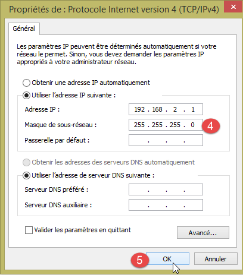
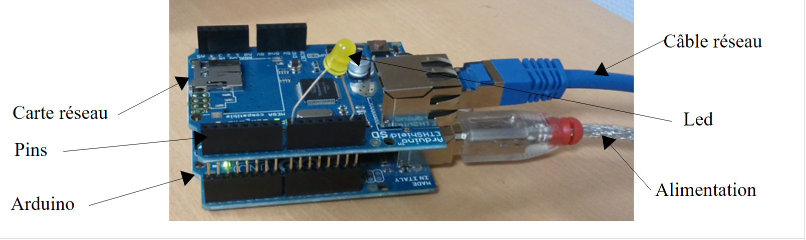
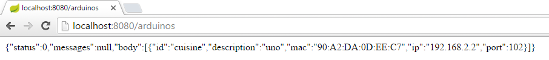
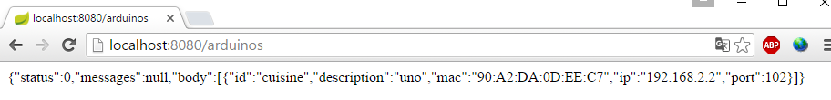
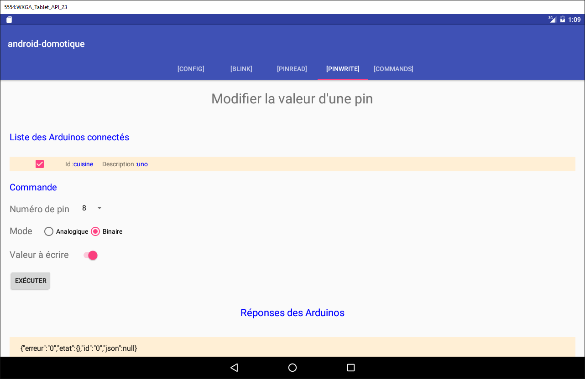
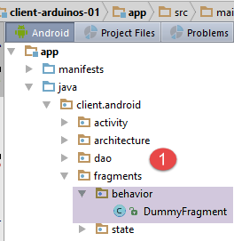
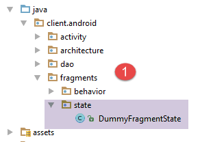
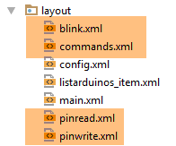
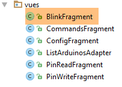

5. TP 2 - Piloter des Arduinos avec une tablette Android
Nous allons maintenant apprendre à piloter une carte Arduino avec une tablette. L'exemple à suivre est celui du projet [client-android-skel] du cours (cf paragraphe 2).
5.1. Architecture du projet
L'ensemble du projet aura l'architecture suivante :
 |
- le bloc [1], serveur web / jSON et Arduinos vous sera donné ;
- vous aurez à construire le bloc [2], la programmation de la tablette Android pour dialoguer avec le serveur web / jSON.
5.2. Le matériel
Vous avez à votre disposition les éléments suivants :
- un Arduino avec une extension Ethernet, une led et un capteur de température ;
- un miniHub à partager avec un autre étudiant ;
- un câble USB pour alimenter l'Arduino ;
- deux câbles réseau pour connecter l'Arduino et le PC sur un même réseau privé ;
- une tablette Android ;
5.2.1. L'Arduino
 |
Voici comment procéder pour connecter les différents éléments ensemble :
- retirez le câble réseau de votre PC ;
- joignez votre PC et l'Arduino par un câble réseau ;
- l'Arduino dont vous disposerez aura déjà été programmé. Son adresse IP sera [192.168.2.2]. Pour que votre PC voit l'Arduino, il faut lui donner une adresse IP sur le réseau [192.168.2]. Les Arduinos ont été programmés pour dialoguer avec un PC ayant l'adresse IP [192.168.2.1]. Voici comment procéder :
Allez sur [Panneau de configuration\Réseau et Internet\Centre Réseau et partage] :
 |
- en [1], cliquez sur le lien [réseau local] ;
- en [2], cliquez le bouton [Propriétés] du réseau local ;
 |  |
- en [3], cliquez sur les propriétés [IPv4] de la carte [réseau local] ;
- en [4], donnez à cette carte l'adresse IP [192.168.2.1] et le masque de sous-réseau [255.255.255.0] ;
- en [5], cliquez sur [OK] autant de fois que nécessaire pour sortir de l'assistant.
5.2.2. La tablette
- à l'aide de votre clé wifi, connectez-votre poste au réseau wifi qu'on vous indiquera. Faites de même avec votre tablette ;
- vérifiez l'adresse IP wifi de votre PC en faisant [ipconfig] dans une fenêtre DOS. Vous allez trouver une adresse du genre [192.168.x.y] ;
dos>ipconfig
Configuration IP de Windows
Carte réseau sans fil Wi-Fi :
Suffixe DNS propre à la connexion. . . :
Adresse IPv6 de liaison locale. . . . .: fe80::39aa:47f6:7537:f8e1%2
Adresse IPv4. . . . . . . . . . . . . .: 192.168.1.25
Masque de sous-réseau. . . . . . . . . : 255.255.255.0
Passerelle par défaut. . . . . . . . . : 192.168.1.1
- vérifiez l'adresse IP wifi de votre tablette. Demandez à votre encadrant comment faire si vous ne savez pas. Vous allez trouver une adresse du genre [192.168.x.z] ;
- inhibez le pare-feu de votre PC s'il est actif [Panneau de configuration\Système et sécurité\Pare-feu Windows] ;
- dans une fenêtre Dos, vérifiez que le PC et la tablette peuvent communiquer en tapant la commande [ping 192.168.x.z] où [192.168.x.z] est l'adresse IP de votre tablette. La tablette doit alors répondre :
dos>ping 192.168.1.26
Envoi d'une requête 'Ping' 192.168.1.26 avec 32 octets de données :
Réponse de 192.168.1.26 : octets=32 temps=102 ms TTL=64
Réponse de 192.168.1.26 : octets=32 temps=134 ms TTL=64
Réponse de 192.168.1.26 : octets=32 temps=168 ms TTL=64
Réponse de 192.168.1.26 : octets=32 temps=208 ms TTL=64
Statistiques Ping pour 192.168.1.26:
Paquets : envoyés = 4, reçus = 4, perdus = 0 (perte 0%),
Durée approximative des boucles en millisecondes :
Minimum = 102ms, Maximum = 208ms, Moyenne = 153ms
La configuration réseau de votre système est désormais prête.
5.2.3. L'émulateur [Genymotion]
L'émulateur [Genymotion] (cf paragraphe 6.9) remplace avantageusement la tablette. Il est quasiment aussi rapide et ne nécessite pas de réseau wifi. C'est cette méthode qu'il est conseillé d'utiliser. Vous pourrez utiliser la tablette pour la vérification finale de votre application.
5.3. Programmation des Arduinos
Nous nous intéressons ici à l'écriture du code C des Arduinos :
 |
A lire
- installation de l'IDE de développement Arduino (cf paragraphe 6.1) ;
- utilisation de bibliothèques jSON (Annexes, paragraphe 6.6) ;
- dans l'IDE de l'Arduino, tester l'exemple d'un serveur TCP (le serveur web par exemple) et celui d'un client TCP (le client Telnet par exemple) ;
- les annexes sur l'environnement de programmation des Arduinos au paragraphe 6.1.
 |
Un Arduino est un ensemble de pins reliées à du matériel. Ces pins sont des entrées ou des sorties. Leur valeur est binaire ou analogique. Pour commander l'Arduino, il y aura deux opérations de base :
- écrire une valeur binaire / analogique sur une pin désignée par son numéro ;
- lire une valeur binaire / analogique sur une pin désignée par son numéro ;
A ces deux opérations de base, nous en ajouterons une troisième :
- faire clignoter une led pendant une certaine durée et avec une certaine fréquence. Cette opération peut être réalisée en appelant de façon répétée les deux opérations de base précédentes. Mais nous verrons aux tests que les échanges de la couche [DAO] avec un Arduino sont de l'ordre de la seconde. Il n'est alors pas possible de faire clignoter une led toutes les 100 millisecondes par exemple. Aussi implanterons-nous sur l'Arduino lui-même cette fonction de clignotement.
Le fonctionnement de l'Arduino sera le suivant :
- les communications entre la couche [DAO] et un Arduino se font via un réseau TCP-IP par échanges de lignes de texte au format jSON (JavaScript Object Notation) ;
- au démarrage, l'Arduino vient se connecter au port 100 d'un serveur d'enregistrement présent dans la couche [DAO]. Il envoie au serveur une unique ligne de texte :
C'est une chaîne jSON caractérisant l'Arduino qui se connecte :
- id : un identifiant de l'Arduino ;
- desc : une description de ce que sait faire l'Arduino. Ici on a simplement mis le type de l'Arduino ;
- mac : adresse Mac de l'Arduino ;
- port : le numéro du port sur lequel l'Arduino va attendre les commandes de la couche [DAO].
Toutes ces informations sont de type chaînes de caractères sauf le port qui est un nombre entier.
- une fois que l'Arduino s'est inscrit auprès du serveur d'enregistrement, il se met à l'écoute sur le port qu'il a indiqué au serveur (102 ci-dessus). Il attend des commandes jSON de la forme suivante :
C'est une chaîne jSON avec les éléments suivants :
- id : un identifiant de la commande. Peut être quelconque ;
- ac : une action. Il y en a trois :
- pw (pin write) pour écrire une valeur sur une pin,
- pr (pin read) pour lire la valeur d'une pin,
- cl (clignoter) pour faire clignoter une led ;
- pa : les paramètres de l'action. Ils dépendent de l'action.
- l'Arduino renvoie systématiquement une réponse à son client. Celle-ci est une chaîne jSON de la forme suivante :
où
- id : l'identifiant de la commande à laquelle on répond ;
- er (erreur) : un code d'erreur s'il y a eu une erreur, 0 sinon ;
- et (état) : un dictionnaire toujours vide sauf pour la commande de lecture pr. Le dictionnaire contient alors la valeur de la pin n° x demandée.
Voici des exemples destinés à clarifier les spécifications précédentes :
Faire clignoter la led n° 8 10 fois avec une période de 100 millisecondes :
Commande | |
Réponse |
Les paramètres pa de la commande cl sont : la durée dur en millisecondes d'un clignotement, le nombre nb de clignotements, le n° pin de la pin de la led.
Ecrire la valeur binaire 1 sur la pin n° 7 :
Commande | |
Réponse |
Les paramètres pa de la commande pw sont : le mode mod b (binaire) ou a (analogique) de l'écriture, la valeur val à écrire, le n° pin de la pin. Pour une écriture binaire, val est 0 ou 1. Pour une écriture analogique, val est dans l'intervalle [0,255].
Ecrire la valeur analogique 120 sur la pin n° 2 :
Commande | |
Réponse |
Lire la valeur analogique de la pin 0 :
Commande | |
Réponse |
Les paramètres pa de la commande pr sont : le mode mod b (binaire) ou a (analogique) de la lecture, le n° pin de la pin. S'il n'y a pas d'erreur, l'Arduino met dans le dictionnaire "et" de sa réponse, la valeur de la pin demandée. Ici pin0 indique que c'est la valeur de la pin n° 0 qui a été demandée et 1023 est cette valeur. En lecture, une valeur analogique sera dans l'intervalle [0, 1024].
Nous avons présenté les trois commandes cl, pw et pr. On peut se demander pourquoi on n'a pas utilisé des champs plus explicites dans les chaînes jSON, action au lieu de ac, pinwrite au lieu de pw, parametres au lieu de pa, ... Un Arduino a une mémoire très réduite. Or les chaînes jSON échangées avec l'Arduino participent à l'occupation mémoire. On a donc choisi de raccourcir celles-ci au maximum.
Voyons maintenant quelques cas d'erreur :
Commande | |
Réponse |
On a envoyé une commande qui n'est pas au format jSON. L'Arduino a renvoyé le code d'erreur 100.
Commande | |
Réponse |
On a envoyé une commande pr en oubliant le paramètre pin. L'Arduino a renvoyé le code d'erreur 302.
Commande | |
Réponse |
On a envoyé une commande pinread inconnue (c'est pr). L'Arduino a renvoyé le code d'erreur 104.
On ne continuera pas les exemples. La règle est simple. L'Arduino ne doit pas planter, quelque soit la commande qu'on lui envoie. Avant d'exécuter une commande jSON, il s'assure que celle-ci est correcte. Dès qu'une erreur apparaît, l'Arduino arrête l'exécution de la commande et renvoie à son client la chaîne jSON d'erreur. Là encore, parce qu'on est contraint en espace mémoire, on renvoie un code d'erreur plutôt qu'un message complet.
Le code du programme exécuté sur l'Arduino vous est fourni dans les exemples de ce document :
 |
Pour le transférer sur l'Arduino :
- connectez celui-ci à votre PC ;
 |  |
- en [1], ouvrez le fichier [arduino_uno.ino]. L'IDE Arduino va se lancer et charger le fichier ;
Note : le code a été créé et testé originellement avec un IDE ARDUINO 1.5.x. Depuis d'autres versions de l'IDE sont sorties. Le code n'a pas fonctionné avec un IDE ARDUINO 1.6.x. Il semble qu'il y ait un problème de compatibilité arrière entre les versions 1.6 et 1.5.
- en [2-4], indiquez le type d'Arduino utilisé ;
 |  |
- en [5-7], indiquez sur quel port série du PC il se trouve ;
- en [8], téléversez (=chargez) le programme [arduino_uno] sur l'Arduino ;
Le code du programme est très commenté. Le lecteur intéressé pourra s'y référer. Nous signalons simplement les lignes du code qui permettent de configurer la communication bidirectionnelle client / serveur entre l'Arduino et le PC :
#include <SPI.h>
#include <Ethernet.h>
#include <ajSON.h>
// ---------------------------------- CONFIGURATION DE L'ARDUINO UNO
// adresse MAC de l'Arduino UNO
byte macArduino[] = {
0x90, 0xA2, 0xDA, 0x0D, 0xEE, 0xC7 };
char * strMacArduino="90:A2:DA:0D:EE:C7";
// l'adresse IP de l'Arduino
IPAddress ipArduino(192,168,2,2);
// son identifiant
char * idArduino="cuisine";
// port du serveur Arduino
int portArduino=102;
// description de l'Arduino
char * descriptionArduino="contrôle domotique";
// le serveur Arduino travaillera sur le port 102
EthernetServer server(portArduino);
// IP du serveur d'enregistrement
IPAddress ipServeurEnregistrement(192,168,2,1);
// port du serveur d'enregistrement
int portServeurEnregistrement=100;
// le client Arduino du serveur d'enregistrement
EthernetClient clientArduino;
// la commande du client
char commande[100];
// la réponse de l'Arduino
char message[100];
// initialisation
void setup() {
// Le moniteur série permettra de suivre les échanges
Serial.begin(9600);
// démarrage de la connection Ethernet
Ethernet.begin(macArduino,ipArduino);
// mémoire disponible
Serial.print(F("Memoire disponible : "));
Serial.println(freeRam());
}
// boucle infinie
void loop()
{
...
}
- ligne 8 : l'adresse Mac de l'arduino. Elle n'a pas beaucoup d'importance ici car l'Arduino va être sur un réseau privé où il y a un PC et un ou plusieurs Arduinos. Il faut simplement que l'adresse Mac soit unique sur ce réseau privé. Normalement, la carte réseau de l'Arduino a un sticker où est indiquée l'adresse Mac de la carte. Si ce sticker est absent et si vous ne connaissez pas l'adresse Mac de la carte, vous pouvez mettre ce que vous voulez en ligne 8 tant que la règle d'unicité de l'adresse Mac sur le réseau privé est respectée ;
- ligne 11 : l'adresse IP de la carte. De nouveau, on met ce qu'on veut du type [192.168.2.x] et on fait varier x pour les différents Arduinos du réseau privé ;
- ligne 13 : identifiant de l'Arduino. Doit être unique parmi les identifiants des Arduinos d'un même réseau privé ;
- ligne 15 : le port de service de l'Arduino. On peut mettre ce qu'on veut ;
- ligne 17 : la description de la fonction de l'Arduino. On peut mettre ce qu'on veut. Attention aux longues chaînes à cause de la mémoire restreinte de l'Arduino ;
- ligne 21 : adresse IP du serveur d'enregistrement de l'Arduino sur le PC. Ne doit pas être modifié ;
- ligne 23 : port de ce service d'enregistrement. Ne doit pas être modifié ;
5.4. Le serveur web / jSON
5.4.1. Installation

Le binaire Java du serveur web / jSON vous est donné :
 |
Ouvrez une fenêtre de commandes et tapez la commande suivante :
Si [java.exe] n'est pas dans le PATH de la fenêtre de commandes, il sera nécessaire de taper le chemin complet de [java.exe] (en général C:\Program Files\java\...).
Une fenêtre DOS va s'ouvrir et afficher des logs :
. ____ _ __ _ _
/\\ / ___'_ __ _ _(_)_ __ __ _ \ \ \ \
( ( )\___ | '_ | '_| | '_ \/ _` | \ \ \ \
\\/ ___)| |_)| | | | | || (_| | ) ) ) )
' |____| .__|_| |_|_| |_\__, | / / / /
=========|_|==============|___/=/_/_/_/
:: Spring Boot :: (v0.5.0.M6)
2014-01-06 11:11:35.550 INFO 8408 --- [ main] arduino.rest.metier.Application : Starting Application on Gportpers3 with PID 8408 (C:\Users\SergeTahÚ\Desktop\part2\server.jar started by ST)
2014-01-06 11:11:35.587 INFO 8408 --- [ main] ationConfigEmbeddedWebApplicationContext : Refreshing org.springframework.boot.context.embedded.AnnotationConfigEmbeddedWebApplicationContext@6a4ba620: startup date [Mon Jan 06 11:11:35 CET 2014]; root of context hierarchy
2014-01-06 11:11:36.765 INFO 8408 --- [ main] o.apache.catalina.core.StandardService : Starting service Tomcat
2014-01-06 11:11:36.766 INFO 8408 --- [ main] org.apache.catalina.core.StandardEngine : Starting Servlet Engine: Apache Tomcat/7.0.42
2014-01-06 11:11:36.876 INFO 8408 --- [ost-startStop-1] o.a.c.c.C.[Tomcat].[localhost].[/] : Initializing Spring embedded WebApplicationContext
2014-01-06 11:11:36.877 INFO 8408 --- [ost-startStop-1] o.s.web.context.ContextLoader : Root WebApplicationContext: initialization completed in 1293 ms
2014-01-06 11:11:37.084 INFO 8408 --- [ost-startStop-1] o.a.c.c.C.[Tomcat].[localhost].[/] : Initializing Spring FrameworkServlet 'dispatcherServlet'
2014-01-06 11:11:37.084 INFO 8408 --- [ost-startStop-1] o.s.web.servlet.DispatcherServlet : FrameworkServlet 'dispatcherServlet': initialization started
2014-01-06 11:11:37.184 INFO 8408 --- [ost-startStop-1] o.s.w.s.handler.SimpleUrlHandlerMapping : Mapped URL path [/**/favicon.ico] onto handler of type [class org.springframework.web.servlet.resource.ResourceHttpRequestHandler]
2014-01-06 11:11:37.386 INFO 8408 --- [ost-startStop-1] s.w.s.m.m.a.RequestMappingHandlerMapping : Mapped "{[/arduinos/blink/{idCommande}/{idArduino}/{pin}/{duree}/{nombre}],methods=[GET],params=[],headers=[],consumes=[],produces=[],custom=[]}" onto public java.lang.String arduino.rest.metier.RestMetier.faireClignoterLed(java.lang.String,java.lang.String,java.lang.String,java.lang.String,java.lang.String,javax.servlet.http.HttpServletResponse)
2014-01-06 11:11:37.388 INFO 8408 --- [ost-startStop-1] s.w.s.m.m.a.RequestMappingHandlerMapping : Mapped "{[/arduinos/commands/{idArduino}],methods=[POST],params=[],headers=[],consumes=[],produces=[],custom=[]}" onto public java.lang.String arduino.rest.metier.RestMetier.sendCommandesJson(java.lang.String,java.lang.String,javax.servlet.http.HttpServletResponse)
2014-01-06 11:11:37.388 INFO 8408 --- [ost-startStop-1] s.w.s.m.m.a.RequestMappingHandlerMapping : Mapped "{[/arduinos/],methods=[GET],params=[],headers=[],consumes=[],produces=[],custom=[]}" onto public java.lang.String arduino.rest.metier.RestMetier.getArduinos(javax.servlet.http.HttpServletResponse)
2014-01-06 11:11:37.389 INFO 8408 --- [ost-startStop-1] s.w.s.m.m.a.RequestMappingHandlerMapping : Mapped "{[/arduinos/pinRead/{idCommande}/{idArduino}/{pin}/{mode}],methods=[GET],params=[],headers=[],consumes=[],produces=[],custom=[]}" onto public java.lang.String arduino.rest.metier.RestMetier.pinRead(java.lang.String,java.lang.String,java.lang.String,java.lang.String,javax.servlet.http.HttpServletResponse)
2014-01-06 11:11:37.390 INFO 8408 --- [ost-startStop-1] s.w.s.m.m.a.RequestMappingHandlerMapping : Mapped "{[/arduinos/pinWrite/{idCommande}/{idArduino}/{pin}/{mode}/{valeur}],methods=[GET],params=[],headers=[],consumes=[],produces=[],custom=[]}" onto public java.lang.String arduino.rest.metier.RestMetier.pinWrite(java.lang.String,java.lang.String,java.lang.String,java.lang.String,java.lang.String,javax.servlet.http.HttpServletResponse)
2014-01-06 11:11:37.463 INFO 8408 --- [ost-startStop-1] o.s.w.s.handler.SimpleUrlHandlerMapping : Mapped URL path [/**] onto handler of type [class org.springframework.web.servlet.resource.ResourceHttpRequestHandler]
2014-01-06 11:11:37.464 INFO 8408 --- [ost-startStop-1] o.s.w.s.handler.SimpleUrlHandlerMapping : Mapped URL path [/webjars/**] onto handler of type [class org.springframework.web.servlet.resource.ResourceHttpRequestHandler]
2014-01-06 11:11:37.881 INFO 8408 --- [ost-startStop-1] o.s.web.servlet.DispatcherServlet : FrameworkServlet 'dispatcherServlet': initialization completed in 796 ms
Serveur d'enregistrement lancÚ sur 192.168.2.1:100
2014-01-06 11:11:38.101 INFO 8408 --- [ Thread-4] arduino.dao.Recorder : Recorder : [11:11:38:101] : [Serveur d'enregistrement : attente d'un client]
2014-01-06 11:11:38.142 INFO 8408 --- [ main] arduino.rest.metier.Application : Started Application in 3.257 seconds
- ligne 11 : un serveur Tomcat embarqué est lancé ;
- ligne 15 : la servlet [dispatcherServlet] de Spring MVC est chargée et exécutée ;
- ligne 18 : l'URL Rest [/arduinos/blink/{idCommande}/{idArduino}/{pin}/{duree}/{nombre}] est détectée ;
- ligne 19 : l'URL Rest [/arduinos/commands/{idArduino}] est détectée ;
- ligne 20 : l'URL Rest [/arduinos/] est détectée ;
- ligne 21 : l'URL Rest [/arduinos/pinRead/{idCommande}/{idArduino}/{pin}/{mode}] est détectée ;
- ligne 22 : l'URL Rest [/arduinos/pinWrite/{idCommande}/{idArduino}/{pin}/{mode}/{valeur}] est détectée ;
- ligne 26 : le serveur d'enregistrement des Arduinos est lancé ;
Connectez votre Arduino au PC si ce n'est déja fait. Le pare-feu du PC doit être désactivé. Puis avec un navigateur demandez l'URL [http://localhost:8080/arduinos] :
 |
Vous devez voir apparaître l'identifiant de l'Arduino connecté. Si vous n'avez rien, pensez à resetter l'Arduino. Il a un bouton poussoir pour cela.
Le serveur web / jSON est désormais installé.
5.4.2. Les URL exposées par le service web / jSON
A lire : projet [Exemple-15] (cf paragraphe 1.16.1) ;
Le service web / jSON a été implémenté avec Spring MVC et expose les URL suivantes :
@Controller
public class WebController {
// couche métier
@Autowired
private IMetier métier;
// liste des arduinos
@RequestMapping(value = "/arduinos", method = RequestMethod.GET, produces = MediaType.APPLICATION_JSON_VALUE)
@ResponseBody
public String getArduinos() throws JsonProcessingException {
...
}
// clignotement
@RequestMapping(value = "/arduinos/blink/{idCommande}/{idArduino}/{pin}/{duree}/{nombre}", method = RequestMethod.GET, produces = MediaType.APPLICATION_JSON_VALUE)
@ResponseBody
public String faireClignoterLed(@PathVariable("idCommande") String idCommande, @PathVariable("idArduino") String idArduino, @PathVariable("pin") int pin, @PathVariable("duree") int duree, @PathVariable("nombre") int nombre) throws JsonProcessingException {
...
}
// envoi de commandes JSON
@RequestMapping(value = "/arduinos/commands/{idArduino}", method = RequestMethod.POST, produces = MediaType.APPLICATION_JSON_VALUE, consumes = MediaType.APPLICATION_JSON_VALUE)
@ResponseBody
public String sendCommandesJson(@PathVariable("idArduino") String idArduino, HttpServletRequest request) throws IOException {
...
}
// lecture pin
@RequestMapping(value = "/arduinos/pinRead/{idCommande}/{idArduino}/{pin}/{mode}", method = RequestMethod.GET, produces = MediaType.APPLICATION_JSON_VALUE)
@ResponseBody
public String pinRead(@PathVariable("idCommande") String idCommande, @PathVariable("idArduino") String idArduino, @PathVariable("pin") int pin, @PathVariable("mode") String mode) throws JsonProcessingException {
....
}
// écriture pin
@RequestMapping(value = "/arduinos/pinWrite/{idCommande}/{idArduino}/{pin}/{mode}/{valeur}", method = RequestMethod.GET, produces = MediaType.APPLICATION_JSON_VALUE)
@ResponseBody
public String pinWrite(@PathVariable("idCommande") String idCommande, @PathVariable("idArduino") String idArduino, @PathVariable("pin") int pin, @PathVariable("mode") String mode, @PathVariable("valeur") int valeur) throws JsonProcessingException {
...
}
}
Les réponses envoyées par le serveur sont des représentations jSON de la classe [Response<T>] suivante :
package client.android.dao.service;
import java.util.List;
public class Response<T> {
// ----------------- propriétés
// statut de l'opération
private int status;
// les éventuels messages d'status
private List<String> messages;
// le corps de la réponse
private T body;
// constructeurs
public Response() {
}
public Response(int status, List<String> messages, T body) {
this.status = status;
this.messages = messages;
this.body = body;
}
// getters et setters
...
}
L'URL [/arduinos] envoie une réponse de type [Response<List<Arduino>>] où [Arduino] est la classe suivante :
package android.arduinos.entities;
import java.io.Serializable;
public class Arduino implements Serializable {
// données
private String id;
private String description;
private String mac;
private String ip;
private int port;
// getters et setters
...
}
- ligne 7 : [id] est l'identifiant de l'arduino ;
- ligne 8 : sa description ;
- ligne 9 : son adresse MAC ;
- ligne 10 : son adresse IP ;
- ligne 11 : le port sur lequel il attend des commandes ;
Les URL :
- [/arduinos/blink/{idCommande}/{idArduino}/{pin}/{duree}/{nombre}] ;
- [/arduinos/pinRead/{idCommande}/{idArduino}/{pin}/{mode}] ;
- [/arduinos/pinWrite/{idCommande}/{idArduino}/{pin}/{mode}/{valeur}] ;
- [/arduinos/commands/{idArduino}] ;
envoient une réponse de type [Response<ArduinoResponse>] où la classe [ArduinoResponse] représente la réponse standard d'un Arduino :
public class ArduinoResponse implements Serializable {
private String json;
private String id;
private String erreur;
private Map<String, Object> etat;
// getters et setters
...
}
- [json] : la chaîne jSON envoyée par un Arduino et qui n'a pu être décodée (cas d'erreur), null sinon ;
- [id] : l'identifiant de la commande à laquelle l'Arduino répond ;
- [erreur] : un code d'erreur, 0 si OK, autre chose sinon ;
- [etat] : un dictionnaire contenant la réponse spécifique à la commande. Il est le plus souvent vide sauf si la commande demandait la lecture d'une valeur de l'Arduino auquel cas celle-ci sera placée dans ce dictionnaire ;
5.4.3. Les tests du service web / jSON
Habituez-vous au serveur web / jSON en testant les URL suivantes :
Voici quelques copies d'écran de ce que vous devez obtenir :
Obtenir la liste des Arduinos connectés :
 |
La chaîne jSON reçue du serveur web / jSON est un objet avec les champs suivants :
- [status] : à 0 indique qu'il n'y a pas eu d'erreur - sinon il y a eu erreur ;
- [messages] : une liste de messages expliquant l'erreur s'il y a eu erreur :
- [body] : la liste des Arduinos s'il n'y a pas eu d'erreur. Chaque Arduino est alors décrit par un objet avec les champs suivants :
- [id] : identifiant de l'Arduino. Deux Arduinos ne peuvent avoir le même identifiant ;
- [description] : courte description de la fonctionnalité de l'Arduino ;
- [mac] : adresse Mac de l'Arduino ;
- [ip]: adresse IP de l'Arduino ;
- [port] : port sur lequel il attend des commandes ;
Faire clignoter la led de la pin n° 8 de l'Arduino identifié par [cuisine], 20 fois toutes les 100 ms :
 |
La chaîne jSON reçue du serveur web / jSON est un objet avec les champs suivants :
- [status] : à 0 indique qu'il n'y a pas eu d'erreur - sinon il y a eu erreur ;
- [messages] : une liste de messages expliquant l'erreur s'il y a eu erreur :
- [body] : la réponse de l'Arduino s'il n'y a pas eu erreur :
- [id] : identifiant de la commande. Cet identifiant est le 1 dans [/blink/1]. L'Arduino reprend cet identifiant de commande dans sa réponse ;
- [erreur] : un n° d'erreur. Une valeur différente de 0 signale une erreur ;
- [etat] : n'est utilisé que pour la lecture d'une pin. A alors pour valeur, la valeur de la pin ;
- [json] : n'est utilisé qu'en cas d'erreur jSON entre le client et le serveur. A alors pour valeur, la chaîne jSON erronée envoyée par l'Arduino ;
Lecture analogique de la pin n° 0 de l'Arduino identifié par [cuisine] :
 |
La chaîne jSON reçue du serveur web / jSON est analogue à la précédente à la différence près du champ [etat] qui représente la valeur de la pin n° 0.
Lecture binaire de la pin n° 5 de l'Arduino identifié par [cuisine] :
 |
La chaîne jSON reçue du serveur web / jSON est analogue à la précédente.
Ecriture binaire de la valeur 1 sur la pin n° 8 de l'Arduino identifié par [cuisine] :
 |
La chaîne jSON reçue du serveur web / jSON est analogue à la précédente.
Le test de l'URL [http://localhost:8080/arduinos/commands/cuisine] est plus délicat. La méthode du serveur web / jSON qui traite cette URL attend une requête POST qu'on ne peut pas simuler simplement avec un navigateur. Pour tester cette URL, on pourra utiliser un navigateur Chrome avec l'extension [Advanced REST Client] (cf paragraphe 6.13) :
 |
- en [1], l'URL de la méthode web / jSON à tester ;
- en [2], la méthode POST pour envoyer la requête ;
- en [3-4], la valeur postée est du jSON ;
- en [5], la chaîne jSON postée. On notera bien les crochets qui commencent et terminent la liste. Ici, dans la liste il n'y a qu'une commande jSON qui fait clignoter la pin n° 8, 10 fois toutes les 100 ms ;
- en [6], on envoie la requête ;
 |
- en [7], la réponse jSON envoyée par le serveur. L'objet a reçu un objet avec les deux champs habituels [status, messages] et un champ [body] dont la valeur est la liste des réponses de l'Arduino à chacune des commandes jSON envoyées.
Voyons ce qui se passe lorsqu'on envoie une commande jSON syntaxiquement incorrecte pour l'Arduino :
 |
On reçoit alors la réponse suivante :
 |
On voit que dans la réponse de l'Arduino, le n° d'erreur est [104] indiquant par là que la commande [xx] n'a pas été reconnue.
5.5. Tests du client Android
 |
Le binaire exécutable du client Android terminé vous est donné :
|
Avec la souris déposez le binaire [app-debug.apk] ci-dessus sur un émulateur de tablette [GenyMotion]. Il va alors être enregistré puis exécuté. Lancez également le serveur web / jSON si ce n'est déja fait. Connectez l'Arduino au PC avec une led dessus. Le client Android permet de gérer les Arduinos à distance. Il présente à l'utilisateur les écrans suivants.
L'onglet [CONFIG] permet de se connecter au serveur et de récupérer la liste des Arduinos connectés :

- en [1], mettez l'adresse IP [192.168.2.1] donnée à votre PC (cf paragraphe 5.2).
L'onglet [PINWRITE] permet d'écrire une valeur sur une pin d'un Arduino :


L'onglet [PINREAD] permet de lire la valeur d'une pin d'un Arduino :

L'onglet [BLINK] permet de faire clignoter une led d'un Arduino :

L'onglet [COMMAND] permet d'envoyer une commande jSON à un Arduino :

5.6. Le client Android du service web / jSON
Nous abordons maintenant l'écriture du client Android.
5.6.1. L'architecture du client
L'architecture du client Android sera celle du projet [Exemple-15] (cf paragraphe 1.16.2) ;
 |
- la couche [DAO] communique avec le serveur web / jSON ;
Le client Android doit pouvoir commander plusieurs Arduinos simultanément. Par exemple, on veut pouvoir faire clignoter deux leds placées sur deux Arduinos, en même temps et non pas l'une après l'autre. Aussi notre client Android utilisera-t-il une tâche asynchrone par Arduino et ces tâches s'exécuteront en parallèle.
5.6.2. Le projet Android Studio du client
Dupliquez le projet [client-android-skel] (cf paragraphe 2) dans le projet [client-arduinos-01] (si besoin est, revoyez comment dupliquer un projet Gradle au paragraphe 1.15) :
5.6.3. Les cinq vues XML
 |
Il y aura cinq vues XML :
- [blink] : pour faire clignoter une led d'un Arduino. Elle est associée au fragment [BlinkFragment] ;
- [commands] : pour envoyer une commande jSON à un Arduino. Elle est associée au fragment [CommandsFragment] ;
- [config] : pour configurer l'URL du service web / jSON et obtenir la liste initiale des Arduinos connectés. Elle est associée au fragment [ConfigFragment] ;
- [pinread] : pour lire la valeur binaire ou analogique d'une pin d'un Arduino. Elle est associée au fragment [PinReadFragment] ;
- [pinwrite] : pour écrire une valeur binaire ou analogique sur une pin d'un Arduino. Elle est associée au fragment [PinWriteFragment] ;
Pour le moment, ces cinq vues XML auront toutes le même contenu vide :
<?xml version="1.0" encoding="utf-8"?>
<ScrollView xmlns:android="http://schemas.android.com/apk/res/android"
android:id="@+id/scrollView1"
android:layout_width="wrap_content"
android:layout_height="wrap_content">
<RelativeLayout xmlns:android="http://schemas.android.com/apk/res/android"
android:layout_width="match_parent"
android:layout_height="match_parent">
</RelativeLayout>
</ScrollView>
- la vue est dans un conteneur [RelativeLayout] (lignes 7-10) lui-même inclus dans un conteneur [ScrollView] (lignes 2-11). Cela nous assure de pouvoir 'scroller' la vue si celle-ci dépasse la taille d'un écran de tablette ;
Travail : créez les cinq vues XML.
5.6.4. Le menu des fragments
Nous savons que les fragments d'un projet construit avec [client-android-skel] doivent être associés avec un menu, même vide. Ici, l'application n'aura pas de menu. Le menu vide est déjà dans le projet ;
 |
5.6.5. Les cinq fragments de l'application
 |  |
Travail : dupliquez le fragment [DummyFragment] dans les cinq fragments de l'application, comme montré en [2].
Le fragment [ConfigFragment] a le squelette suivant :
package client.android.fragments.behavior;
import client.android.R;
import client.android.architecture.core.AbstractFragment;
import client.android.architecture.custom.CoreState;
import client.android.fragments.state.DummyFragmentState;
import org.androidannotations.annotations.EFragment;
import org.androidannotations.annotations.OptionsMenu;
@EFragment
@OptionsMenu(R.menu.menu_vide)
public class ConfigFragment extends AbstractFragment {
// champs hérités de la classe parent -------------------------------------------------------
...
Remplacez la ligne 10 par la ligne suivante :
@EFragment(R.layout.config)
Travail : faites de même pour les quatre autres fragments en adaptant l'attribut [@EFragment] de la classe.
Fragment | Vue |
ConfigFragment | |
PinReadFragment | |
PinWriteFragment | |
CommandsFragment | |
BlinkFragment | |
5.6.6. Les états des fragments
 |  |
Chaque fragment aura un état.
Travail : dupliquez la classe [DummyFragmentState] cinq fois, pour créer les cinq états présentés en [2].
5.6.7. Personnalisation du projet
 |
Le package [architecture / custom] contient les éléments personnalisables de l'architecture de l'application.
5.6.7.1. L'interface [IMainActivity]
L'interface [IMainActivity] définit ce que peuvent demander les fragments à l'activité ainsi que les constante de l'application. Cette interface sera ici la suivante :
package client.android.architecture.custom;
import client.android.architecture.core.ISession;
import client.android.dao.service.IDao;
public interface IMainActivity extends IDao {
// accès à la session
ISession getSession();
// changement de vue
void navigateToView(int position, ISession.Action action);
// gestion de l'attente
void beginWaiting();
void cancelWaiting();
// constantes de l'application -------------------------------------
// mode debug
boolean IS_DEBUG_ENABLED = true;
// délai maximal d'attente de la réponse du serveur
int TIMEOUT = 1000;
// délai d'attente avant exécution de la requête client
int DELAY = 000;
// authentification basique
boolean IS_BASIC_AUTHENTIFICATION_NEEDED = false;
// adjacence des fragments
int OFF_SCREEN_PAGE_LIMIT = 1;
// barre d'onglets
boolean ARE_TABS_NEEDED = true;
// image d'attente
boolean IS_WAITING_ICON_NEEDED = true;
// nombre de fragments
int FRAGMENTS_COUNT = 5;
// n°s de vue
int VUE_CONFIG = 0;
int VUE_BLINK = 1;
int VUE_PINREAD = 2;
int VUE_PINWRITE = 3;
int VUE_COMMANDS = 4;
}
- lignes 25, 28, 31, 40 : configuration de la couche [DAO]. Cette application interroge un serveur web / jSON ;
- ligne 37 : cette application a des onglets ;
- ligne 43 : cette application a cinq fragments ;
- lignes 46-50 : les n°s des cinq fragments ;
- ligne 34 : adjacence des fragments. Le développeur peut mettre ici une valeur dans l'intervalle [1, FRAGMENTS_COUNT-1] ;
5.6.7.2. La classe [CoreState]
La classe [CoreState] est la classe parent des états des fragments :
package client.android.architecture.custom;
import client.android.architecture.core.MenuItemState;
import client.android.fragments.state.*;
import com.fasterxml.jackson.annotation.JsonIgnoreProperties;
import com.fasterxml.jackson.annotation.JsonSubTypes;
import com.fasterxml.jackson.annotation.JsonTypeInfo;
@JsonIgnoreProperties(ignoreUnknown = true)
@JsonTypeInfo(use = JsonTypeInfo.Id.NAME, include = JsonTypeInfo.As.PROPERTY)
@JsonSubTypes({
@JsonSubTypes.Type(value = ConfigFragmentState.class),
@JsonSubTypes.Type(value = BlinkFragmentState.class),
@JsonSubTypes.Type(value = PinReadFragmentState.class),
@JsonSubTypes.Type(value = PinWriteFragmentState.class),
@JsonSubTypes.Type(value = CommandsFragmentState.class)}
)
public class CoreState {
// fragment visité ou non
protected boolean hasBeenVisited = false;
// état de l'éventuel menu du fragment
protected MenuItemState[] menuOptionsState;
// getters et setters
...
}
- lignes 12-16 : il faut déclarer ici les classes des états des cinq fragments ;
5.6.8. La classe [MainActivity]
 |
La classe [MainActivity] sera la suivante :
package client.android.activity;
import android.support.design.widget.TabLayout;
import android.util.Log;
import client.android.R;
import client.android.architecture.core.AbstractActivity;
import client.android.architecture.core.AbstractFragment;
import client.android.architecture.core.ISession;
import client.android.architecture.custom.IMainActivity;
import client.android.architecture.custom.Session;
import client.android.dao.entities.Arduino;
import client.android.dao.entities.ArduinoCommand;
import client.android.dao.entities.ArduinoResponse;
import client.android.dao.service.Dao;
import client.android.dao.service.IDao;
import client.android.dao.service.Response;
import client.android.fragments.behavior.*;
import org.androidannotations.annotations.Bean;
import org.androidannotations.annotations.EActivity;
import org.androidannotations.annotations.OptionsMenu;
import rx.Observable;
import java.util.List;
import java.util.Locale;
@EActivity
@OptionsMenu(R.menu.menu_main)
public class MainActivity extends AbstractActivity {
// couche [DAO]
@Bean(Dao.class)
protected IDao dao;
// session
private Session session;
// méthodes classe parent -----------------------
@Override
protected void onCreateActivity() {
// log
if (IS_DEBUG_ENABLED) {
Log.d(className, "onCreateActivity");
}
// session
this.session = (Session) super.session;
// création des cinq onglets
for (int i = 0; i < 5; i++) {
TabLayout.Tab newTab = tabLayout.newTab();
newTab.setText(getFragmentTitle(i));
tabLayout.addTab(newTab);
}
}
@Override
protected IDao getDao() {
return dao;
}
@Override
protected AbstractFragment[] getFragments() {
return new AbstractFragment[]{new ConfigFragment_(), new BlinkFragment_(), new PinReadFragment_(), new PinWriteFragment_(), new CommandsFragment_()};
}
@Override
protected CharSequence getFragmentTitle(int position) {
Locale l = Locale.getDefault();
switch (position) {
case 0:
return getString(R.string.config_titre).toUpperCase(l);
case 1:
return getString(R.string.blink_titre).toUpperCase(l);
case 2:
return getString(R.string.pinread_titre).toUpperCase(l);
case 3:
return getString(R.string.pinwrite_titre).toUpperCase(l);
case 4:
return getString(R.string.commands_titre).toUpperCase(l);
}
return null;
}
@Override
protected void navigateOnTabSelected(int position) {
// on affiche le fragment n° position
navigateToView(position, ISession.Action.NAVIGATION);
}
@Override
protected int getFirstView() {
return IMainActivity.VUE_CONFIG;
}
// implémentation IDao -----------------------------------------
}
- lignes 46-50 : création des cinq onglets de l'application ;
- ligne 48 : les titres des onglets sont fournis par la méthode des lignes 63-79 ;
- les cinq fragments sont instanciés ligne 60. A cause des annotations AA, les classes des fragments sont celles présentées précédemment suffixées avec un underscore ;
- lignes 63-79 : on définit un titre pour chacun des fragments. Ces titres seront cherchés dans le fichier [res / values / strings.xml]
 |
Le contenu de [strings.xml] est le suivant :
<?xml version="1.0" encoding="utf-8"?>
<resources>
<!-- nom de l'application -->
<string name="app_name">[arduinos-client-01]</string>
<!-- Fragments et onglets -->
<string name="config_titre">[Config]</string>
<string name="blink_titre">[Blink]</string>
<string name="pinread_titre">[PinRead]</string>
<string name="pinwrite_titre">[PinWrite]</string>
<string name="commands_titre">[Commands]</string>
</resources>
Travail : créez les éléments précédents et compilez le projet. Il ne doit pas y avoir d'erreurs.
Exécutez le projet. Vous devez obtenir la vue suivante sur l'émulateur :

Examinez les logs qui ont accompagné l'affichage de la première vue et suivez la trace des différentes étapes exécutées. Passez d'un onglet à l'autre et continuez à suivre les logs.
5.6.9. La vue XML [config]
La vue XML [config] sera la suivante :
 |  |
La vue ci-dessus est obtenue avec le code XML suivant :
<?xml version="1.0" encoding="utf-8"?>
<ScrollView xmlns:android="http://schemas.android.com/apk/res/android"
android:id="@+id/scrollView1"
android:layout_width="wrap_content"
android:layout_height="wrap_content">
<RelativeLayout
android:layout_width="match_parent"
android:layout_height="match_parent">
<TextView
android:id="@+id/txt_TitreConfig"
android:layout_width="wrap_content"
android:layout_height="wrap_content"
android:layout_alignParentTop="true"
android:layout_centerHorizontal="true"
android:layout_marginTop="150dp"
android:text="@string/txt_TitreConfig"
android:textSize="@dimen/titre"/>
<TextView
android:id="@+id/txt_UrlServiceRest"
android:layout_width="wrap_content"
android:layout_height="wrap_content"
android:layout_alignParentLeft="true"
android:layout_below="@+id/txt_TitreConfig"
android:layout_marginTop="50dp"
android:text="@string/txt_UrlServiceRest"
android:textSize="20sp"/>
<EditText
android:id="@+id/edt_UrlServiceRest"
android:layout_width="300dp"
android:layout_height="wrap_content"
android:layout_alignBaseline="@+id/txt_UrlServiceRest"
android:layout_alignBottom="@+id/txt_UrlServiceRest"
android:layout_marginLeft="20dp"
android:layout_toRightOf="@+id/txt_UrlServiceRest"
android:ems="10"
android:hint="@string/hint_UrlServiceRest"
android:inputType="textUri">
<requestFocus/>
</EditText>
<TextView
android:id="@+id/txt_MsgErreurIpPort"
android:layout_width="wrap_content"
android:layout_height="wrap_content"
android:layout_alignParentLeft="true"
android:layout_below="@+id/txt_UrlServiceRest"
android:layout_marginTop="20dp"
android:text="@string/txt_MsgErreurUrlServiceRest"
android:textColor="@color/red"
android:textSize="20sp"/>
<TextView
android:id="@+id/txt_arduinos"
android:layout_width="wrap_content"
android:layout_height="wrap_content"
android:layout_alignParentLeft="true"
android:layout_below="@+id/txt_MsgErreurIpPort"
android:layout_marginTop="40dp"
android:text="@string/titre_list_arduinos"
android:textColor="@color/blue"
android:textSize="20sp"/>
<Button
android:id="@+id/btn_Rafraichir"
android:layout_width="wrap_content"
android:layout_height="wrap_content"
android:layout_alignBaseline="@+id/txt_arduinos"
android:layout_alignBottom="@+id/txt_arduinos"
android:layout_marginLeft="20dp"
android:layout_toRightOf="@+id/txt_arduinos"
android:text="@string/btn_rafraichir"/>
<Button
android:id="@+id/btn_Annuler"
android:layout_width="wrap_content"
android:layout_height="wrap_content"
android:layout_alignBaseline="@+id/txt_arduinos"
android:layout_alignBottom="@+id/txt_arduinos"
android:layout_marginLeft="20dp"
android:layout_toRightOf="@+id/txt_arduinos"
android:text="@string/btn_annuler"
android:visibility="invisible"/>
<ListView
android:id="@+id/ListViewArduinos"
android:layout_width="match_parent"
android:layout_height="200dp"
android:layout_alignParentLeft="true"
android:layout_below="@+id/txt_arduinos"
android:layout_marginTop="30dp"
android:background="@color/wheat">
</ListView>
</RelativeLayout>
</ScrollView>
La vue utilise des chaînes de caractères (android:text aux lignes 15, 25, 37, 50, 61, 73) qui sont définies dans le fichier [res / values / strings] :
 |
<?xml version="1.0" encoding="utf-8"?>
<resources>
<string name="app_name">android-domotique</string>
<!-- Fragments et onglets -->
<string name="config_titre">[Config]</string>
<string name="blink_titre">[Blink]</string>
<string name="pinread_titre">[PinRead]</string>
<string name="pinwrite_titre">[PinWrite]</string>
<string name="commands_titre">[Commands]</string>
<!-- Config -->
<string name="txt_TitreConfig">Se connecter au serveur</string>
<string name="txt_UrlServiceRest">Url du service web / jSON</string>
<string name="txt_MsgErreurUrlServiceRest">L\'Url du service doit être entrée sous la forme Ip1.Ip2.Ip3.IP4:Port/contexte</string>
<string name="hint_UrlServiceRest">ex (192.168.1.120:8080/rest)</string>
<string name="btn_annuler">Annuler</string>
<string name="btn_rafraichir">Rafraîchir</string>
<string name="titre_list_arduinos">Liste des Arduinos connectés</string>
</resources>
La vue utilise des couleurs ( android:textColor aux lignes 51 et 62] définies dans le fichier [res / values / colors] :
 |
<?xml version="1.0" encoding="utf-8"?>
<resources>
<color name="colorPrimary">#3F51B5</color>
<color name="colorPrimaryDark">#303F9F</color>
<color name="colorAccent">#FF4081</color>
<color name="floral_white">#FFFAF0</color>
<!-- appli -->
<color name="red">#FF0000</color>
<color name="blue">#0000FF</color>
<color name="wheat">#FFEFD5</color>
</resources>
La vue utilise des dimensions ( android:textSize à la ligne 16) qui sont définies dans le fichier [res / values / dimens] :
 |
<resources>
<!-- Default screen margins, per the Android Design guidelines. -->
<dimen name="activity_horizontal_margin">16dp</dimen>
<dimen name="activity_vertical_margin">16dp</dimen>
<dimen name="fab_margin">16dp</dimen>
<dimen name="appbar_padding_top">8dp</dimen>
<!-- appli -->
<dimen name="titre">30dp</dimen>
</resources>
Cette technique n'a pas été utilisée pour toutes les dimensions. C'est cependant celle qui est conseillée. Elle permet de changer des dimensions en un seul endroit.
Travail : créez les éléments précédents.
Exécutez de nouveau votre projet. Vous devez obtenir la vue suivante :

5.6.10. Le fragment [ConfigFragment]
 |
Pour gérer la nouvelle vue [config], le code du fragment [ConfigFragment] évolue de la façon suivante :
package client.android.fragments.behavior;
import android.view.View;
import android.widget.Button;
import android.widget.EditText;
import android.widget.ListView;
import android.widget.TextView;
import client.android.R;
import client.android.architecture.core.AbstractFragment;
import client.android.architecture.custom.CoreState;
import client.android.architecture.custom.IMainActivity;
import client.android.fragments.state.ConfigFragmentState;
import org.androidannotations.annotations.Click;
import org.androidannotations.annotations.EFragment;
import org.androidannotations.annotations.OptionsMenu;
import org.androidannotations.annotations.ViewById;
@EFragment(R.layout.config)
@OptionsMenu(R.menu.menu_vide)
public class ConfigFragment extends AbstractFragment {
// les éléments de l'interface visuelle
@ViewById(R.id.btn_Rafraichir)
protected Button btnRafraichir;
@ViewById(R.id.btn_Annuler)
protected Button btnAnnuler;
@ViewById(R.id.edt_UrlServiceRest)
protected EditText edtUrlServiceRest;
@ViewById(R.id.txt_MsgErreurIpPort)
protected TextView txtMsgErreurUrlServiceRest;
@ViewById(R.id.ListViewArduinos)
protected ListView listArduinos;
@Click(R.id.btn_Rafraichir)
protected void doRafraichir() {
}
// gestion du cycle de vie du fragment -------------------------------------
@Override
public CoreState saveFragment() {
return new ConfigFragmentState();
}
@Override
protected int getNumView() {
return IMainActivity.VUE_CONFIG;
}
@Override
protected void initFragment(CoreState previousState) {
}
@Override
protected void initView(CoreState previousState) {
// 1ère visite ?
if(previousState==null){
txtMsgErreurUrlServiceRest.setVisibility(View.INVISIBLE);
}
}
@Override
protected void updateOnSubmit(CoreState previousState) {
}
@Override
protected void updateOnRestore(CoreState previousState) {
}
@Override
protected void notifyEndOfUpdates() {
// boutons
initButtons();
}
@Override
protected void notifyEndOfTasks(boolean runningTasksHaveBeenCanceled) {
}
// méthodes privées --------------------------------------------
private void initButtons() {
// le bouton [Exécuter] remplace le bouton [Annuler]
btnAnnuler.setVisibility(View.INVISIBLE);
btnRafraichir.setVisibility(View.VISIBLE);
}
}
- lignes 23-32 : les éléments de l'interface visuelle ;
- lignes 58-60 : lors de la 1ère visite faite au fragment, le message d'erreur est caché ;
- lignes 73-76 : à chaque fois que le fragment sera affiché, le bouton [Annuler] sera caché (ligne 82) et le bouton [Rafraîchir] sera affiché (lignes 86-87). En effet dans cette application, un fragment ne peut pas être affiché alors qu'une opération asynchrone est en cours et donc le bouton [Annuler] visible ;
Travail : créez les éléments précédents.
Exécutez cette nouvelle version. La 1ère vue doit être désormais la suivante :

5.6.10.1. Le bouton [Rafraîchir]
Nous allons pour le moment gérer le clic sur le bouton [Rafraîchir] de la façon suivante :
@Click(R.id.btn_Rafraichir)
protected void doRafraichir() {
// on va lancer une tâche - on prépare l'attente
beginWaiting(1);
}
@Click(R.id.btn_Annuler)
protected void doAnnuler() {
if (isDebugEnabled) {
Log.d(className, "Annulation demandée");
}
// on annule les tâches asynchrones
cancelRunningTasks();
}
protected void beginWaiting(int numberOfRunningTasks) {
// on prépare l'attente des tâches
beginRunningTasks(numberOfRunningTasks);
// le bouton [Annuler] remplace le bouton [Rafraîchir]
btnRafraichir.setVisibility(View.INVISIBLE);
btnAnnuler.setVisibility(View.VISIBLE);
}
// gestion du cycle de vie du fragment -------------------------------------
...
@Override
protected void notifyEndOfTasks(boolean runningTasksHaveBeenCanceled) {
// boutons dans leur état initial
initButtons();
}
// méthodes privées --------------------------------------------
private void initButtons() {
// le bouton [Exécuter] remplace le bouton [Annuler]
btnAnnuler.setVisibility(View.INVISIBLE);
btnRafraichir.setVisibility(View.VISIBLE);
}
- lignes 1-5 : la méthode exécutée lors d'un clic sur le bouton [Rafraîchir] ;
- ligne 4 : on commence l'attente ;
- ligne 18 : on passe à la classe parent le nombre de tâches asynchrones qu'on va lancer. L'image d'attente va apparaître ;
- lignes 20-21 : cette attente va se traduire par une apparition du bouton [Annuler], la disparition du bouton [Rafraîchir], l'apparition de l'image d'attente. Il ne se passe rien d'autre. L'utilisateur peut cependant cliquer sur le bouton [Annuler]. La méthode des lignes 7-14 va alors s'exécuter ;
- ligne 13 : on demande à la classe parent d'annuler toutes les tâches. La classe va le faire et appeler en retour la méthode des lignes 25-29 pour signaler que toutes les tâches sont terminées. Le paramètre [runningTasksHaveBeenCanceled] aura la valeur true pour indiquer qu'il y a eu annulation des tâches ;
- lignes 35-36 : le bouton [Annuler] va disparaître alors que le bouton [Rafraîchir] va réapparaître.
Travail : Faites ces modifications puis exécutez le projet. Vérifiez que le bouton [Rafraîchir] lance l'attente et que le bouton [Annuler] l'arrête. Observez les logs.
5.6.10.2. Vérification des saisies
Dans la version précédente, nous ne vérifiions pas la validité de l'URL saisie. Pour la vérifier, nous ajoutons le code suivant dans [ConfigFragment] :
// les valeurs saisies
private String urlServiceRest;
@Click(R.id.btn_Rafraichir)
protected void doRafraichir() {
// on vérifie les saisies
if (!pageValid()) {
return;
}
// on va lancer une tâche - on prépare l'attente
beginWaiting(1);
}
// vérification des saisies
private boolean pageValid() {
// au départ pas de msg d'erreur
txtMsgErreurUrlServiceRest.setVisibility(View.INVISIBLE);
// on récupère l'Ip et le port du serveur
urlServiceRest = String.format("http://%s", edtUrlServiceRest.getText().toString().trim());
// on vérifie sa validité
try {
URI uri = new URI(urlServiceRest);
String host = uri.getHost();
int port = uri.getPort();
if (host == null || port == -1) {
throw new Exception();
}
} catch (Exception ex) {
// affichage msg d'erreur
txtMsgErreurUrlServiceRest.setVisibility(View.VISIBLE);
// retour à l'UI
return false;
}
// c'est bon
return true;
}
- ligne 2 : l'URL saisie ;
- lignes 7-9 : avant de faire quoique ce soit, on vérifie la validité des saisies ;
- ligne 19 : on récupère l'URL saisie et on lui ajoute le préfixe [http://] ;
- ligne 22 : on essaie de construire un objet URI (Uniform Resource Identifier) avec. Si l'URL saisie est syntaxiquement incorrecte, on aura une exception ;
- lignes 23-27 : on crée une exception si l'URI est correcte mais qu'on a cependant [host==null] et [port==-1]. C'est un cas possible ;
- ligne 30 : on a eu une exception. On affiche le message d'erreur ;
- ligne 32 : on retourne [false] pour indiquer que la page est invalide ;
- ligne 35 : on n'a pas eu d'erreurs. On retourne [true] pour indiquer que la page est valide ;
Travail : créez les éléments précédents.
Testez cette nouvelle version et vérifiez que les URL invalides sont bien signalées.
5.6.10.3. Affichage de la liste des Arduinos
 |
Les différentes vues vont avoir besoin d'afficher la liste des Arduinos connectés. Pour cela, nous allons définir différentes classes et une vue XML :
- un Arduino sera représenté par la classe [Arduino] [1] ;
- la classe [CheckedArduino] [1] est héritée de la classe [Arduino] à laquelle on a ajouté un booléen pour savoir si l'Arduino a été sélectionné ou non dans une liste ;
La classe [Arduino] est celle déjà utilisée par le serveur et présentée au paragraphe 5.4.2. C'est la suivante :
package android.arduinos.entities;
import java.io.Serializable;
public class Arduino implements Serializable {
// données
private String id;
private String description;
private String mac;
private String ip;
private int port;
// getters et setters
...
}
- ligne 7 : [id] est l'identifiant de l'arduino ;
- ligne 8 : sa description ;
- ligne 9 : son adresse MAC ;
- ligne 10 : son adresse IP ;
- ligne 11 : le port sur lequel il attend des commandes ;
Cette classe correspond à la chaîne jSON reçue du serveur lorsqu'on lui demande la liste des Arduinos connectés :
La classe [CheckedArduino] hérite de la classe [Arduino] :
package android.arduinos.entities;
public class CheckedArduino extends Arduino {
private static final long serialVersionUID = 1L;
// un Arduino peut être sélectionné
private boolean isChecked;
// constructeur
public CheckedArduino(Arduino arduino, boolean isChecked) {
// parent
super(arduino.getId(), arduino.getDescription(), arduino.getMac(), arduino.getIp(), arduino.getPort());
// local
this.isChecked = isChecked;
}
// getters et setters
public boolean isChecked() {
return isChecked;
}
public void setChecked(boolean isChecked) {
this.isChecked = isChecked;
}
}
- ligne 3 : la classe [CheckedArduino] hérite de la classe [Arduino] ;
- ligne 6 : on lui ajoute un booléen qui nous servira à savoir si dans la liste des Arduinos affichée, un Arduino a été sélectionné ou non ;
Dans [ConfigFragment], nous allons simuler l'obtention de la liste des Arduinos connectés.
 |
@ViewById(R.id.ListViewArduinos)
protected ListView listArduinos;
..
@Click(R.id.btn_Rafraichir)
protected void doRafraichir() {
// on vérifie les saisies
if (!pageValid()) {
return;
}
// on va lancer une tâche - on prépare l'attente
beginWaiting(1);
// on nettoie la liste des Arduinos
clearArduinos();
// on demande la liste des Arduinos en tâche de fond
getArduinosInBackground();
}
private void getArduinosInBackground() {
...
}
// raz liste des Arduinos
private void clearArduinos() {
// on crée une liste vide
List<String> strings = new ArrayList<>();
// on l'affiche
listArduinos.setAdapter(new ArrayAdapter<String>(activity, android.R.layout.simple_list_item_1, android.R.id.text1, strings));
}
- ligne 2 : le ListView qui affiche les Arduinos connectés au serveur ;
- ligne 5 : la méthode qui demande la liste des Arduinos connectés ;
- ligne 11 : on indique à la classe parent qu'on va lancer une tâche asynchrone ;
- ligne 12 : on efface la liste des Arduinos actuellement affichée ;
- ligne 15 : on demande en tâche de fond la liste des Arduinos connectés ;
- lignes 23-28 : la méthode qui efface la liste des Arduinos actuellement affichée ;
La méthode [getArduinosInBackground] est la suivante :
private void getArduinosInBackground() {
// on crée une liste d'arduinos fictive
List<Arduino> arduinos = new ArrayList<>();
for (int i = 0; i < 20; i++) {
arduinos.add(new Arduino("id" + i, "desc" + i, "mac" + i, "ip" + i, i));
}
// on simule une réponse du serveur
Response<List<Arduino>> response = new Response<>();
response.setBody(arduinos);
// on annule l'attente
cancelWaitingTasks();
// on change les boutons
initButtons();
// on consomme la réponse
consumeArduinosResponse(response);
}
- lignes 3-6 : on crée une liste de 20 Arduinos ;
- lignes 8-9 : on construit la réponse de type [Response<List<Arduino>>] (paragraphe 5.4.2) qui va encapsuler la liste des Arduinos créée ;
- ligne 11 : on annule l'attente ;
- ligne 13 : on remet les boutons dans leur état initial ;
- ligne 15 : on consomme la réponse ;
La méthode [consumeArduinosResponse] est la suivante :
// affichage réponse
private void consumeArduinosResponse(Response<List<Arduino>> response) {
// erreur ?
if (response.getStatus() != 0) {
// affichage
showAlert(response.getMessages());
// retour à l'Ui
return;
}
// on crée une liste de [CheckedArduino]
List<CheckedArduino> checkedArduinos = new ArrayList<>();
for (Arduino arduino : response.getBody()) {
checkedArduinos.add(new CheckedArduino(arduino, false));
}
// on les affiche
showArduinos(checkedArduinos);
}
- lignes 4-11 : on regarde le code d'erreur de la réponse envoyée par le serveur :
- ligne 4 : si le code d'erreur est différent de zéro ;
- ligne 6 : on affiche les messages stockés par le serveur dans le champ [messages] de la réponse ;
- ligne 8 : on revient à l'Ui ;
- lignes 11-16 : s'il n'y a pas eu d'erreurs, on affiche la liste des Arduinos reçue, après l'avoir transformée en un type List<CheckedArduino> ;
La méthode [showArduinos] est la suivante :
private void showArduinos(List<CheckedArduino> checkedArduinos) {
// on crée une liste de String à partir la liste des Arduinos
List<String> strings = new ArrayList<>();
for (CheckedArduino checkedArduino : checkedArduinos) {
strings.add(checkedArduino.toString());
}
// on l'affiche
listArduinos.setAdapter(new ArrayAdapter<>(activity, android.R.layout.simple_list_item_1, android.R.id.text1, strings));
}
Travail : faites les modifications précédentes et exécutez votre projet.
Vous devez obtenir la vue suivante lorsque vous cliquez sur le bouton [Rafraîchir] :

La saisie en [1] n'est pas utilisée. Vous pouvez donc mettre n'importe quoi tant que ça respecte le format attendu.
5.6.10.4. Un patron pour afficher un Arduino
Pour l'instant, les Arduinos connectés sont affichés dans la vue [Config] de la façon suivante :

On veut désormais les afficher comme suit :
- en [1], une case à cocher qui permettra de sélectionner un Arduino. Cette case à cocher sera cachée lorsqu'on voudra présenter une liste d'Arduinos non sélectionnables ;
- en [2], l'identifiant de l'Arduino ;
- en [3], sa description ;
Ce qui suit reprend des concepts développés dans les projets [exemple-19] et [exemple-19B] du paragraphe 1.20. Revoyez-les si besoin est.
Nous créons tout d'abord la vue qui va afficher un élément de la liste des Arduinos :
 |
Le code de la vue [listarduinos_item] ci-dessus est le suivant :
<?xml version="1.0" encoding="utf-8"?>
<RelativeLayout xmlns:android="http://schemas.android.com/apk/res/android"
android:id="@+id/RelativeLayout1"
android:layout_width="match_parent"
android:layout_height="match_parent"
android:background="@color/wheat"
android:orientation="vertical" >
<CheckBox
android:id="@+id/checkBoxArduino"
android:layout_width="wrap_content"
android:layout_height="wrap_content"
android:layout_alignParentLeft="true"
android:layout_alignParentTop="true"
android:layout_toRightOf="@+id/txt_arduino_description" />
<TextView
android:id="@+id/TextView1"
android:layout_width="wrap_content"
android:layout_height="wrap_content"
android:layout_alignBaseline="@+id/checkBoxArduino"
android:layout_marginLeft="40dp"
android:text="@string/txt_arduino_id" />
<TextView
android:id="@+id/txt_arduino_id"
android:layout_width="wrap_content"
android:layout_height="wrap_content"
android:layout_alignBaseline="@+id/checkBoxArduino"
android:layout_alignParentTop="true"
android:layout_toRightOf="@+id/TextView1"
android:text="@string/dummy"
android:textColor="@color/blue" />
<TextView
android:id="@+id/TextView2"
android:layout_width="wrap_content"
android:layout_height="wrap_content"
android:layout_alignBaseline="@+id/checkBoxArduino"
android:layout_alignParentTop="true"
android:layout_marginLeft="20dp"
android:layout_toRightOf="@+id/txt_arduino_id"
android:text="@string/txt_arduino_description" />
<TextView
android:id="@+id/txt_arduino_description"
android:layout_width="wrap_content"
android:layout_height="wrap_content"
android:layout_alignBaseline="@+id/checkBoxArduino"
android:layout_alignTop="@+id/TextView2"
android:layout_toRightOf="@+id/TextView2"
android:text="@string/dummy"
android:textColor="@color/blue" />
</RelativeLayout>
- lignes 9-15 : la case à cocher ;
- lignes 17-23 : le texte [Id : ] ;
- lignes 25-33 : l'id de l'Arduino sera inscrit ici ;
- lignes 35-43 : le texte [Description : ] ;
- lignes 45-53 : la description de l'Arduino sera inscrite ici ;
Cette vue utilise des textes (lignes 23, 32, 43) définis dans [res / values / strings.xml] :
<string name="dummy">XXXXX</string>
<!-- listarduinos_item -->
<string name="txt_arduino_id">Id : </string>
<string name="txt_arduino_description">Description : </string>
La vue utilise également une couleur (lignes 33, 53) définie dans [res / values / colors.xml] :
<?xml version="1.0" encoding="utf-8"?>
<resources>
<color name="red">#FF0000</color>
<color name="blue">#0000FF</color>
<color name="wheat">#FFEFD5</color>
<color name="floral_white">#FFFAF0</color>
</resources>
Le gestionnaire d'affichage d'un élément de la liste des Arduinos
 |
La classe [ListArduinosAdapter] est la classe appelée par le [ListView] pour afficher chacun des éléments de la liste des Arduinos. Son code est le suivant :
package istia.st.android.vues;
import istia.st.android.R;
...
public class ListArduinosAdapter extends ArrayAdapter<CheckedArduino> {
// le tableau des arduinos
private List<CheckedArduino> arduinos;
// le contexte d'exécution
private Context context;
// l'id du layout d'affichage d'une ligne de la liste des arduinos
private int layoutResourceId;
// la ligne comporte ou non un checkbox
private Boolean selectable;
// constructeur
public ListArduinosAdapter(Context context, int layoutResourceId, List<CheckedArduino> arduinos, Boolean selectable) {
// parent
super(context, layoutResourceId, arduinos);
// on mémorise les infos
this.arduinos = arduinos;
this.context = context;
this.layoutResourceId = layoutResourceId;
this.selectable = selectable;
}
@Override
public View getView(final int position, View convertView, ViewGroup parent) {
...
}
}
- ligne 18 : le constructeur de la classe admet quatre paramètres : l'activité en cours d'exécution, l'identifiant de la vue à afficher pour chaque élément de la source de données, la source de données qui alimente la liste, un booléen qui indique si la case à cocher associée à chaque Arduino doit être affichée ou non ;
- lignes 8-15 : ces quatre informations sont mémorisées localement ;
Ligne 29, la méthode [getView] est chargée de générer la vue n° [position] dans le [ListView] et d'en gérer les événements. Son code est le suivant :
@Override
public View getView(int position, View convertView, ViewGroup parent) {
// l'arduino courant
final CheckedArduino arduino = arduinos.get(position);
// on crée la ligne courante
View row = ((Activity) context).getLayoutInflater().inflate(layoutResourceId, parent, false);
// on récupère les références sur les [TextView]
TextView txtArduinoId = (TextView) row.findViewById(R.id.txt_arduino_id);
TextView txtArduinoDesc = (TextView) row.findViewById(R.id.txt_arduino_description);
// on remplit la ligne
txtArduinoId.setText(arduino.getId());
txtArduinoDesc.setText(arduino.getDescription());
// la CheckBox n'est pas toujours visible
CheckBox ck = (CheckBox) row.findViewById(R.id.checkBoxArduino);
ck.setVisibility(selectable ? View.VISIBLE : View.INVISIBLE);
if (selectable) {
// on lui affecte sa valeur
ck.setChecked(arduino.isChecked());
// on gère le clic
ck.setOnCheckedChangeListener(new OnCheckedChangeListener() {
public void onCheckedChanged(CompoundButton buttonView, boolean isChecked) {
arduino.setChecked(isChecked);
}
});
}
// on rend la ligne
return row;
}
- ligne 2 : le 1er paramètre est la position dans le [ListView] de la ligne à créer. C'est également la position dans la liste des Arduinos mémorisée localement ;
- ligne 4 : on récupère une référence sur l'Arduino qui va être associé à la ligne construite ;
- ligne 6 : la ligne courante est construite à partir de la vue [listarduinos_item.xml] ;
- lignes 8-9 : les références sur les deux [TextView] sont récupérées ;
- lignes 11-12 : les deux [TextView] reçoivent leur valeur ;
- ligne 14 : on récupère une référence sur la case à cocher ;
- ligne 15 : on la rend visible ou non, selon la valeur [selectable] passée initialement au constructeur ;
- ligne 16 : si la case à cocher est présente ;
- ligne 18 : on lui affecte la valeur [isChecked] de l'Arduino courant ;
- lignes 20-26 : on gère le clic sur la case à cocher ;
- ligne 23 : la valeur de la case à cocher est mémorisée dans l'Arduino courant ;
Gestion de la liste des Arduinos
L'affichage de la liste des Arduinos est pour le moment géré par deux méthodes de la classe [ConfigFragment] :
- [clearArduinos] : qui affiche une liste vide ;
- [showArduinos] : qui affiche la liste renvoyée par le serveur ;
Ces deux méthodes évoluent de la façon suivante :
// raz liste des Arduinos
private void clearArduinos() {
// on affiche une liste vide
ListArduinosAdapter adapter = new ListArduinosAdapter(getActivity(), R.layout.listarduinos_item, new ArrayList<CheckedArduino>(), false);
listArduinos.setAdapter(adapter);
}
// affichage liste d'Arduinos
private void showArduinos(List<CheckedArduino> checkedArduinos) {
// on affiche les Arduinos
ListArduinosAdapter adapter = new ListArduinosAdapter(getActivity(), R.layout.listarduinos_item, checkedArduinos, false);
listArduinos.setAdapter(adapter);
}
Travail : Faites ces modifications et testez la nouvelle application.

5.6.10.5. La session
La session est l'endroit où nous mettons les informations partagées par les fragments et l'activité. Les fragments ont tous besoin de faire afficher la liste des Arduinos connectés Aussi une première version de la session sera la suivante :
package client.android.architecture.custom;
import client.android.activity.CheckedArduino;
import client.android.architecture.core.AbstractSession;
import java.util.ArrayList;
import java.util.List;
public class Session extends AbstractSession {
// données à partager entre fragments eux-mêmes et entre fragments et activité
// les éléments qui ne peuvent être sérialisés en jSON doivent avoir l'annotation @JsonIgnore
// ne pas oublier les getters et setters nécessaires pour la sérialisation / désérialisation jSON
// la liste des Arduinos
private List<CheckedArduino> checkedArduinos = new ArrayList<>();
// getters et setters
...
}
Travail : créez la classe [Session] précédente.
La création de cette session nous amène à modifier le code déjà écrit de la façon suivante :
// affichage réponse
private void consumeArduinosResponse(Response<List<Arduino>> response) {
// erreur ?
if (response.getStatus() != 0) {
// affichage
showAlert(response.getMessages());
// annulation
doAnnuler();
// retour à l'Ui
return;
}
// on crée une liste de [CheckedArduino]
List<CheckedArduino> checkedArduinos = new ArrayList<>();
for (Arduino arduino : response.getBody()) {
checkedArduinos.add(new CheckedArduino(arduino, false));
}
// on la met en session
session.setCheckedArduinos(checkedArduinos);
// on les affiche
showArduinos(checkedArduinos);
// on annule l'attente
cancelWaitingTasks();
}
- ligne 18 : la liste des Arduinos créée par les lignes précédentes est mise dans la session ;
5.6.10.6. Gestion de l'état du fragment
Lors d'une rotation du périphérique, les composants visuels de la vue sont restitués (par défaut) dans l'état où ils étaient lors de la conception de la vue :
- le [ListView] contient les éléments que le concepteur y a mis ;
- le message d'erreur est dans l'état visible ou pas dans lequel le concepteur l'a mis ;
Les états des composants visuels à la conception peuvent convenir ou pas lors de la restauration d'un fragment. Qu'en est-il ici ?
- le [ListView] doit afficher la liste des Arduinos connectés. La valeur du [ListView] à la conception ne peut donc pas être utilisée ;
- le [TextView] du message d'erreur doit être restitué dans l'état visible ou pas qu'il avait lors de la sauvegarde. Sa valeur à la conception ne peut convenir à ces deux cas ;
Il nous faut donc sauvegarder l'état de ces deux composants lors d'une sauvegarde de l'état du fragment :
- la liste des Arduinos connectés ;
- la visibilité (affiché / caché) du message d'erreur sur la saisie de l'URL du service web / jSON ;
La liste des Arduinos étant présente en session, elle sera automatiquement sauvegardée. La visibilité du message d'erreur sera mémorisée dans la classe [ConfigFragmentState] suivante :
 |
package client.android.fragments.state;
import client.android.architecture.custom.CoreState;
public class ConfigFragmentState extends CoreState {
// visibilité message d'erreur
private boolean txtMsgErreurUrlServiceRestVisible;
// getters et setters
...
}
Travail : créez la classe [ConfigFragmentState] précédente.
Pour restituer correctement les états des fragments il faut que leurs méthodes [getNumView] et [saveFragment] soient modifiées. Par exemple, celle du fragment [BlinkFragment] est actuellement la suivante :
@Override
public CoreState saveFragment() {
// il faut sauvegarder le fragment
DummyFragmentState state=new DummyFragmentState();
// ...
return state;
// s'il n'y a rien à sauvegarder faire [return new CoreState();] et supprimer la classe [DummyFragmentState]
}
@Override
protected int getNumView() {
// il faut retourner le n° du fragment dans le tableau des fragments gérés par l'activité (cf MainActivity)
return 0;
}
Si on ne fait rien, l'état rendu ligne 6 va être sauvegardé dans l'élément 0 (ligne 13) du tableau CoreState[] coreStates de la classe [AbstractSession] (ligne 5 ci-dessous) :
public class AbstractSession implements ISession {
...
// état des vues
private CoreState[] coreStates = new CoreState[0];
...
Or il doit être sauvegardé dans l'élément correspondant au n° du fragment [BlinkFragment] dans le tableau des fragments définis dans la classe [MainActivity] (ligne 9 ci-dessous) :
@EActivity
@OptionsMenu(R.menu.menu_main)
public class MainActivity extends AbstractActivity {
...
@Override
protected AbstractFragment[] getFragments() {
return new AbstractFragment[]{new ConfigFragment_(), new BlinkFragment_(), new PinReadFragment_(), new PinWriteFragment_(), new CommandsFragment_()};
}
Les n°s des fragments ont été définis dans l'interface [IMainActivity] :
public interface IMainActivity extends IDao {
...
// n°s de vue
int VUE_CONFIG = 0;
int VUE_BLINK = 1;
int VUE_PINREAD = 2;
int VUE_PINWRITE = 3;
int VUE_COMMANDS = 4;
}
Au final, l'état du fragment [BlinkFragment] sera géré correctement si on écrit :
@Override
public CoreState saveFragment() {
// il faut sauvegarder le fragment
DummyFragmentState state=new DummyFragmentState();
// ...
return state;
// s'il n'y a rien à sauvegarder faire [return new CoreState();] et supprimer la classe [DummyFragmentState]
}
@Override
protected int getNumView() {
// il faut retourner le n° du fragment dans le tableau des fragments gérés par l'activité (cf MainActivity)
return IMainActivity.VUE_BLINK;
}
- ligne 14 : on retourne le n° du fragment [BlinkFragment] dans le tableau des fragments gérés par l'activité ;
Par ailleurs, la classe [CoreState] parente des états des fragments est pour l'instant la suivante (cf paragraphe 5.6.7.2) :
package client.android.architecture.custom;
import client.android.architecture.core.MenuItemState;
import client.android.fragments.state.*;
import com.fasterxml.jackson.annotation.JsonIgnoreProperties;
import com.fasterxml.jackson.annotation.JsonSubTypes;
import com.fasterxml.jackson.annotation.JsonTypeInfo;
@JsonIgnoreProperties(ignoreUnknown = true)
@JsonTypeInfo(use = JsonTypeInfo.Id.NAME, include = JsonTypeInfo.As.PROPERTY)
@JsonSubTypes({
@JsonSubTypes.Type(value = ConfigFragmentState.class),
@JsonSubTypes.Type(value = BlinkFragmentState.class),
@JsonSubTypes.Type(value = PinReadFragmentState.class),
@JsonSubTypes.Type(value = PinWriteFragmentState.class),
@JsonSubTypes.Type(value = CommandsFragmentState.class)}
)
public class CoreState {
// fragment visité ou non
protected boolean hasBeenVisited = false;
// état de l'éventuel menu du fragment
protected MenuItemState[] menuOptionsState;
// getters et setters
....
}
- lignes 12-16 : la classe [DummyFragmentState] ne figure pas dans la liste des classes filles de la classe [CoreState]. Or la méthode [saveFragment] de la classe [BlinkFragment] rend actuellement un type [ DummyFragmentState]. Si on laisse les choses en l'état, la sérialisation / désérialisation de la session va échouer et la session ne sera pas restaurée conduisant à un plantage de l'application ;
La méthode [saveFragment] du fragment [BlinkFragment] doit être réécrite de la façon suivante :
@Override
public CoreState saveFragment() {
// il faut sauvegarder le fragment
BlinkFragmentState state=new BlinkFragmentState();
// ...
return state;
// s'il n'y a rien à sauvegarder faire [return new CoreState();] et supprimer la classe [DummyFragmentState]
}
Travail : dans chacun des fragments, modifiez la méthode [getNumView] pour qu'elle rende le n° du fragment et la méthode [saveFragment] pour qu'elle rende une instance de la classe d'état du fragment (comme ci-dessus).
5.6.10.7. Gestion du cycle de vie du fragment
Nous nous intéressons ici au cycle de vie du fragment [ConfigFragment], notamment aux quatre méthodes :
- [saveFragment] : doit sauvegarder l'état du fragment afin qu'il puisse être restitué ultérieurement ;
- [initFragment] : qui doit initialiser certains champs du fragment si besoin est. Cette méthode est appelée au démarrage de l'application et à chaque fois qu'il y a une rotation du périphérique. Très exactement, elle est appelée lorsque le fragment devient visible après l'un des deux événements précédents ;
- [initView] : qui doit initialiser certains composants de la vue si besoin est. Cette méthode est appelée à chaque fois que [initFragment] a été appelée et lorsque la vue doit être régénérée parce que le fragment est, à un moment donné, sorti de l'adjacence du fragment affiché. Comme précédemment, elle est appelée lorsque le fragment devient visible après l'un des ces événements ;
- [updateOnRestore] : qui est exécutée après les deux précédentes méthodes lorsqu'il y a eu rotation du périphérique mais également lorsqu'il y a eu navigation. Son rôle est de restituer l'état précédent du fragment ;
Ces méthodes seront les suivantes :
// adaptateur de la liste des Arduinos
private ListArduinosAdapter adapterListArduinos;
...
// gestion du cycle de vie du fragment -------------------------------------
@Override
public CoreState saveFragment() {
ConfigFragmentState state = new ConfigFragmentState();
state.setTxtMsgErreurUrlServiceRestVisible(txtMsgErreurUrlServiceRest.getVisibility() == View.VISIBLE);
return state;
}
@Override
protected void initFragment(CoreState previousState) {
// adaptateur listArduinos
adapterListArduinos = new ListArduinosAdapter(activity, R.layout.listarduinos_item, session.getCheckedArduinos(), false);
}
@Override
protected void initView(CoreState previousState) {
// liaison listview / adaptateur
listArduinos.setAdapter(adapterListArduinos);
// 1ère visite ?
if (previousState == null) {
// ListView vide - fait par [initFragment]
// message d'erreur caché
txtMsgErreurUrlServiceRest.setVisibility(View.INVISIBLE);
} else {
// on restitue la visibilité du message d'erreur
ConfigFragmentState state = (ConfigFragmentState) previousState;
txtMsgErreurUrlServiceRest.setVisibility(state.isTxtMsgErreurUrlServiceRestVisible() ? View.VISIBLE : View.INVISIBLE);
}
}
@Override
protected void updateOnSubmit(CoreState previousState) {
}
@Override
protected void updateOnRestore(CoreState previousState) {
}
@Override
protected void notifyEndOfUpdates() {
// boutons
initButtons();
}
- ligne 2 : l'adaptateur du ListView des Arduinos. Est une variable globale parce qu'utilisée dans différentes méthodes ;
- lignes 7-12 : la méthode [saveFragment] sauve dans un type [ConfigFragmentState] la visibilité du TextView txtMsgErreurUrlServiceRestVisible (ligne 10) ;
- lignes 14-19 : la méthode [initFragment] initialise l'adaptateur de la ligne 2 avec la liste des Arduinos présente en session (ligne 17). On rappelle que le rôle de [initFragment] est d'initialiser des champs du fragment. Ici cette initialisation est à faire dans tous les cas, 1ère visite (previousState==null) ou pas ;
- ligne 17 : on voit que l'adaptateur est lié à la source de données [session.getCheckedArduinos]. Il ne faut pas que celle-ci ait la valeur null. Pour cette raison, le champ [session.checkedArduinos] est initialisé avec une liste vide dans la session :
// la liste des Arduinos
private List<CheckedArduino> checkedArduinos = new ArrayList<>();
- lignes 21-35 : la méthode [initView] a pour rôle d'initialiser certains composants de l'interface visuelle, notamment ceux dont la valeur n'est pas conservée lors de la rotation du périphérique ;
- ligne 24 : le ListView des Arduinos est associé à l'adaptateur de la ligne 2 ;
- lignes 28-32 : on distingue la 1ère visite des autres visites ;
- ligne 29 : lors de la 1ère visite, on doit afficher un [ListView] vide. C'est le cas puisque lors de la 1ère visite, l'adaptateur du [ListView] a été associé à une liste vide (ligne 17) ;
- ligne 31 : le message d'erreur est caché ;
- lignes 32-36 : le cas où ce n'est pas la 1ère visite ;
- le [ListView] est déjà dans le bon état depuis la ligne 24. Il n'y a rien de plus à faire ;
- lignes 34-35 : on restaure le message d'erreur dans l'état où il était lors de la dernière sauvegarde du fragment ;
- lignes 31-36 : la méthode [updateOnRestore] doit remettre le fragment dans son état initial. On arrive à la méthode [updateOnRestore] de deux façons :
- soit parce qu'il y a eu rotation du périphérique. Dans ce cas, toutes les initialisations à faire l'ont été dans [initView] ;
- soit parce qu'on navigue d'un onglet vers l'onglet [Config]. Si le fragment [Config] est sorti de l'adjacence des fragments affichés depuis qu'on l'a quitté, la méthode [initView] a alors été exécutée et le fragment est déjà dans l'état souhaité. Si le fragment [Config] n'est pas sorti de l'adjacence des fragments affichés depuis qu'on l'a quitté, ses composants visuels n'ont alors pas changé d'état et il n'y a rien à faire ;
On voit que la méthode [updateOnRestore] n'a rien à faire. C'est parfois le cas, parfois pas. La différence vient de la méthode [updateOnSubmit] : si cette méthode fait quelque chose qui rend inutiles certaines initialisations faites dans [initView], alors ces initialisations devraient être faites dans la méthode [updateOnRestore]. Prenons l'exemple d'un bouton radio à trois valeurs V1, V2, V3. Peut-être que dans le cas d'une navigation associée à une action [SUBMIT], le bouton radio coché doit toujours être celui de valeur V1. Dans ce cas, restaurer la valeur du bouton radio dans la méthode [initView] est inutile, car dans le cas d'un [SUBMIT], cette valeur va être remplacée par celle donnée par la méthode [updateOnSubmit]. Il est préférable alors de déplacer cette restauration dans la méthode [updateOnRestore] pour éviter de faire parfois une opération inutile.
- lignes 48-52 : la méthode [notifyEndOfUpdates] est exécutée après toutes les précédentes ;
- ligne 51 : les boutons sont mis dans leur état initial : bouton [Rafraîchir] affiché, bouton [Annuler] caché :
Travail : ajoutez le code précédent dans [ConfigFragment] puis exécutez l'application. Constatez que lorsque vous faites une rotation du périphérique, l'onglet [Config] garde son état (message d'erreur, liste des Arduinos). Vérifiez qu'il en est de même lorsque vous faites une simple navigation onglet [config] --> onglet [Commands] --> onglet [Config]. Dans ce dernier cas, si vous avez gardé dans [IMainActivity] une adjacence de fragments de 1, alors la vue du fragment [ConfigFragment] est détruite lorsqu'on passe à l'onglet [Commands] puis recréée lorsqu'on revient à l'onglet [Config]. Lors des tests, examinez les logs.
5.6.10.8. Amélioration du code
Le code du fragment [ConfigFragment] peut être amélioré. Nous avons par exemple écrit :
// adaptateur de la liste des Arduinos
private ListArduinosAdapter adapterListArduinos;
...
// affichage liste d'Arduinos
private void showArduinos(List<CheckedArduino> checkedArduinos) {
// on affiche les Arduinos
ListArduinosAdapter adapter = new ListArduinosAdapter(getActivity(), R.layout.listarduinos_item, checkedArduinos, false);
listArduinos.setAdapter(adapter);
}
// raz liste des Arduinos
private void clearArduinos() {
// on affiche une liste vide
ListArduinosAdapter adapter = new ListArduinosAdapter(getActivity(), R.layout.listarduinos_item, new ArrayList<CheckedArduino>(), false);
listArduinos.setAdapter(adapter);
}
- on voit que lignes 9 et 16, on utilise une variable locale déconnectée du champ de la ligne 2 alors que c'est bien la même entité qu'on veut manipuler ;
Nous faisons évoluer le code de la façon suivante :
// adaptateur de la liste des Arduinos
private ListArduinosAdapter adapterListArduinos;
@Click(R.id.btn_Rafraichir)
protected void doRafraichir() {
...
}
private void getArduinosInBackground() {
...
// on la consomme
consumeArduinosResponse(response);
}
// affichage réponse
private void consumeArduinosResponse(Response<List<Arduino>> response) {
// erreur ?
if (response.getStatus() != 0) {
// affichage
showAlert(response.getMessages());
// annulation
doAnnuler();
// retour à l'Ui
return;
}
// on crée une liste de [CheckedArduino]
List<CheckedArduino> checkedArduinos = session.getCheckedArduinos();
checkedArduinos.clear();
for (Arduino arduino : response.getBody()) {
checkedArduinos.add(new CheckedArduino(arduino, false));
}
// on les affiche
adapterListArduinos.notifyDataSetChanged();
// on annule l'attente
cancelWaitingTasks();
}
@Override
protected void initFragment(CoreState previousState) {
// adaptateur listArduinos
adapterListArduinos = new ListArduinosAdapter(activity, R.layout.listarduinos_item, session.getCheckedArduinos(), false);
}
@Override
protected void initView(CoreState previousState) {
// liaison listview / adaptateur
listArduinos.setAdapter(adapterListArduinos);
...
}
- lorsque la méthode de la ligne 5 est exécutée, le cycle de vie du fragment a été exécuté. Donc :
- l'adaptateur de la ligne 2 a été associé à sa source de données (ligne 41) ;
- le [ListView] des Arduinos connectés a été relié à cet adaptateur (ligne 48) ;
Lorsque nous voulons changer l'affichage du [ListView], il faut faire deux choses :
- changer le contenu de la source de données [session.checkedArduinos] ;
- signaler ce changement à l'adaptateur par l'instruction [adapterListArduinos.notifyDataSetChanged()] ;
Il s'agit bien de changer le contenu de la source de données et non la source de données elle-même. Si on change la source de données elle-même, l'opération [adapterListArduinos.notifyDataSetChanged()] continuera à faire afficher l'ancienne source de données. Il faudrait alors associer l'adaptateur avec la nouvelle source de données.
Le code est le suivant :
- ligne 27 : nous récupérons la source de données ;
- ligne 28 : nous la vidons. Pour cette raison, nous avons supprimé la méthode [clearArduinos] ;
- lignes 29-31 : dans cette liste devenue vide, on ajoute de nouveaux éléments ;
- ligne 33 : on dit à l'adaptateur de se rafraîchir. Cela va rafraîchir l'affichage du [ListView] associé ;
Travail : faites ces modifications et vérifiez que votre application fonctionne toujours.
5.6.11. Communication entre vues
Pour vérifier la communication entre vues, on va faire afficher par toutes les autres vues la liste des Arduinos obtenue par la vue [Config]. Commençons par la vue [blink.xml]. Alors qu'elle n'affichait rien, elle va désormais afficher la liste des Arduinos connectés :

 |
Le code XML de la vue [blink.xml] sera le suivant :
<?xml version="1.0" encoding="utf-8"?>
<ScrollView xmlns:android="http://schemas.android.com/apk/res/android"
android:id="@+id/scrollView1"
android:layout_width="wrap_content"
android:layout_height="wrap_content">
<?xml version="1.0" encoding="utf-8"?>
<RelativeLayout xmlns:android="http://schemas.android.com/apk/res/android"
xmlns:tools="http://schemas.android.com/tools"
android:id="@+id/RelativeLayout1"
android:layout_width="match_parent"
android:layout_height="match_parent">
<TextView
android:id="@+id/txt_arduinos"
android:layout_width="wrap_content"
android:layout_height="wrap_content"
android:layout_alignParentLeft="true"
android:layout_marginTop="150dp"
android:text="@string/titre_list_arduinos"
android:textColor="@color/blue"
android:textSize="20sp" />
<ListView
android:id="@+id/ListViewArduinos"
android:layout_width="match_parent"
android:layout_height="200dp"
android:layout_alignParentLeft="true"
android:layout_below="@+id/txt_arduinos"
android:layout_marginTop="30dp"
android:background="@color/wheat">
</ListView>
</RelativeLayout>
</ScrollView>
Ce code a été repris directement de la vue [config.xml]. On a simplement modifié la marge haute ligne 19.
Travail : dupliquez ce code dans les vues [commands.xml, pinread.xml, pinwrite.xml].
Le code du fragment [BlinkFragment] associé à la vue [blink.xml] évolue lui aussi :
 |
// composants visuels
@ViewById(R.id.ListViewArduinos)
protected ListView listArduinos;
// adaptateur de la liste des Arduinos
private ListArduinosAdapter adapterListArduinos;
...
// méthodes imposées par la classe parent -------------------------------------------------------
...
@Override
protected void initFragment(CoreState previousState) {
// adaptateur listArduinos
adapterListArduinos = new ListArduinosAdapter(activity, R.layout.listarduinos_item, session.getCheckedArduinos(), true);
}
@Override
protected void initView(CoreState previousState) {
// liaison listview / adaptateur
listArduinos.setAdapter(adapterListArduinos);
}
...
- lignes 2-3 : le composant [ListView] des Arduinos connectés ;
- ligne 6 : l'adaptateur de ce [ListView] ;
- lignes 12-23 : le code des méthodes [initFragment] et [initView] est celui déjà utilisé pour le fragment [ConfigFragment] ;
- ligne 15 : lorsque le fragment doit être réinitialisé, on réinitialise l'adaptateur de la ligne 2 en l'associant à la liste des Arduinos mémorisée en session. Le dernier paramètre [true] du constructeur [ListArduinosAdapter] signifie que l'on veut voir une case à cocher à côté de chaque Arduino ;
- ligne 22 : lorsque la vue du fragment doit être réinitialisée, on associe le [ListView] des Arduinos connectés avec l'adaptateur de la ligne 6 ;
Travail : Dupliquez ce code dans les autres fragments [CommandsFragment, PinReadFragment, PinWriteFragment]. Exécutez l'application et constatez maintenant que chaque onglet affiche la liste des Arduinos connectés. Constatez également que si vous cochez des Arduinos dans un onglet et que vous naviguez vers un autre onglet, vous les retrouvez cochés dans ce dernier.
Note : L'explication du maintien des Arduinos cochés est la suivante. La classe [ListArduinosAdapter] a été présentée au paragraphe 5.6.10.4. Le code lié à la case à cocher est le suivant :
// l'arduino courant
final CheckedArduino arduino = arduinos.get(position);
...
// la CheckBox n'est pas toujours visible
CheckBox ck = (CheckBox) row.findViewById(R.id.checkBoxArduino);
ck.setVisibility(selectable ? View.VISIBLE : View.INVISIBLE);
if (selectable) {
// on lui affecte sa valeur
ck.setChecked(arduino.isChecked());
// on gère le clic
ck.setOnCheckedChangeListener(new OnCheckedChangeListener() {
public void onCheckedChanged(CompoundButton buttonView, boolean isChecked) {
arduino.setChecked(isChecked);
}
});
}
- lignes 11-15 : si dans l'onglet X, on coche une case, l'Arduino de la ligne 2 a sa propriété [checked] mise à true (ligne 14) ;
- lorsqu'on passe à l'onglet Y, le [ListView] des Arduinos de cet onglet est affiché. Ligne 9, on voit que si l'Arduino de la ligne 2 a sa propriété [checked] mise à true, alors la case [ck] de la ligne 5 va être cochée ;
5.6.12. La couche [DAO]
 |
Note : pour cette partie, revoyez l'implémentation de la couche [DAO] dans le projet [exemple-16B] (cf paragraphe 2.8.3).
Pour l'instant, nous avons généré manuellement la liste des Arduinos connectés. Nous allons maintenant la demander au serveur web / jSON. Pour cela, nous allons construire la couche [DAO] :
 |
5.6.12.1. L'interface IDao
L'interface [IDao] de la couche [DAO] sera la suivante :
package client.android.dao.service;
import client.android.dao.entities.Arduino;
import client.android.dao.entities.Response;
import rx.Observable;
import java.util.List;
public interface IDao {
// Url du service web
void setUrlServiceWebJson(String url);
// utilisateur
void setUser(String user, String mdp);
// timeout du client
void setTimeout(int timeout);
// authentification basique
void setBasicAuthentification(boolean isBasicAuthentificationNeeded);
// mode debug
void setDebugMode(boolean isDebugEnabled);
// délai d'attente en millisecondes du client avant requête
void setDelay(int delay);
// spécifique ----------------------------------------
// liste des arduinos
Observable<Response<List<Arduino>>> getArduinos();
}
- lignes 11-26 : ces lignes sont déjà présentes dans l'interface [IDao] du projet modèle [client-android-skel] ;
- ligne 30 : la méthode [getArduinos] permet d'obtenir la liste des Arduinos connectés sous la forme d'un observable de type Observable<[Response<List<Arduino>>>] ;
On rappelle que [Response<T>] est le type de toutes les réponses envoyées par le serveur sous la forme d'une chaîne jSON :
package client.android.dao.entities;
import java.util.List;
public class Response<T> {
// ----------------- propriétés
// statut de l'opération
private int status;
// les éventuels messages d'erreur
private List<String> messages;
// le corps de la réponse
private T body;
// constructeurs
public Response() {
}
public Response(int status, List<String> messages, T body) {
this.status = status;
this.messages = messages;
this.body = body;
}
// getters et setters
...
}
5.6.12.2. L'interface [WebClient]
 |
L'interface [WebClient] est une interface dont la bibliothèque AA fournit une implémentation. Cette interface sera la suivante :
package client.android.dao.service;
import client.android.dao.entities.Arduino;
import client.android.dao.entities.Response;
import org.androidannotations.rest.spring.annotations.Get;
import org.androidannotations.rest.spring.annotations.Path;
import org.androidannotations.rest.spring.annotations.Rest;
import org.androidannotations.rest.spring.api.RestClientRootUrl;
import org.androidannotations.rest.spring.api.RestClientSupport;
import org.springframework.http.converter.json.MappingJackson2HttpMessageConverter;
import org.springframework.web.client.RestTemplate;
import java.util.List;
@Rest(converters = {MappingJackson2HttpMessageConverter.class})
public interface WebClient extends RestClientRootUrl, RestClientSupport {
// RestTemplate
void setRestTemplate(RestTemplate restTemplate);
// spécifique --------------------------------------
// liste des arduinos
@Get("/arduinos")
Response<List<Arduino>> getArduinos();
}
- lignes 15-19 : ces lignes sont présentes de base dans l'interface [WebClient] du projet modèle [client-android-skel] ;
- ligne 23 : l'URL du serveur qui permet d'obtenir la liste des Arduinos avec une opération GET. On rappelle que cette URL est mesurée par rapport à l'URL racine [RestClientRootUrl] de la ligne 16 ;
- ligne 24 : le serveur renvoie la chaîne jSON d'un type [Response<List<Arduino>>]. Cette chaîne jSON est automatiquement désérialisée en le type [Response<List<Arduino>>] grâce au convertisseur jSON [MappingJackson2HttpMessageConverter] de la ligne 15 ;
5.6.12.3. La classe [Dao]
La classe [Dao] implémente l'interface [IDao] de la façon suivante :
package client.android.dao.service;
import android.util.Log;
import client.android.dao.entities.Arduino;
import client.android.dao.entities.Response;
import org.androidannotations.annotations.AfterInject;
import org.androidannotations.annotations.Bean;
import org.androidannotations.annotations.EBean;
import org.androidannotations.rest.spring.annotations.RestService;
import org.springframework.http.client.ClientHttpRequestInterceptor;
import org.springframework.http.client.SimpleClientHttpRequestFactory;
import org.springframework.http.converter.json.MappingJackson2HttpMessageConverter;
import org.springframework.web.client.RestTemplate;
import rx.Observable;
import java.util.ArrayList;
import java.util.List;
@EBean(scope = EBean.Scope.Singleton)
public class Dao extends AbstractDao implements IDao {
// client du service web
@RestService
protected WebClient webClient;
// sécurité
@Bean
protected MyAuthInterceptor authInterceptor;
// le RestTemplate
private RestTemplate restTemplate;
// factory du RestTemplate
private SimpleClientHttpRequestFactory factory;
@AfterInject
public void afterInject() {
// log
Log.d(className, "afterInject");
// on construit le restTemplate
factory = new SimpleClientHttpRequestFactory();
restTemplate = new RestTemplate(factory);
// on fixe le convertisseur jSON
restTemplate.getMessageConverters().add(new MappingJackson2HttpMessageConverter());
// on fixe le restTemplate du client web
webClient.setRestTemplate(restTemplate);
}
@Override
public void setUrlServiceWebJson(String url) {
// on fixe l'URL du service web
webClient.setRootUrl(url);
}
@Override
public void setUser(String user, String mdp) {
// on enregistre l'utilisateur dans l'intercepteur
authInterceptor.setUser(user, mdp);
}
@Override
public void setTimeout(int timeout) {
if (isDebugEnabled) {
Log.d(className, String.format("setTimeout thread=%s, timeout=%s", Thread.currentThread().getName(), timeout));
}
// configuration factory
factory.setReadTimeout(timeout);
factory.setConnectTimeout(timeout);
}
@Override
public void setBasicAuthentification(boolean isBasicAuthentificationNeeded) {
if (isDebugEnabled) {
Log.d(className, String.format("setBasicAuthentification thread=%s, isBasicAuthentificationNeeded=%s", Thread.currentThread().getName(), isBasicAuthentificationNeeded));
}
// intercepteur d'authentification ?
if (isBasicAuthentificationNeeded) {
// on ajoute l'intercepteur d'authentification
List<ClientHttpRequestInterceptor> interceptors = new ArrayList<ClientHttpRequestInterceptor>();
interceptors.add(authInterceptor);
restTemplate.setInterceptors(interceptors);
}
}
// méthodes privées -------------------------------------------------
private void log(String message) {
if (isDebugEnabled) {
Log.d(className, message);
}
}
// implémentation IDao spécifique -----------------------------------------------
@Override
public Observable<Response<List<Arduino>>> getArduinos() {
// exécution client web
return getResponse(new IRequest<Response<List<Arduino>>>() {
@Override
public Response<List<Arduino>> getResponse() {
return webClient.getArduinos();
}
});
}
}
- lignes 19-87 : ces lignes sont de base dans la classe [Dao] du projet [client-android-skel] ;
- lignes 91-100 : implémentation de la méthode [getArduinos] ;
- ligne 94 : on appelle la méthode [getResponse] de la classe parent. L'unique paramètre de cette méthode est une instance de l'interface [IRequest<T>] ;
- lignes 95-99 : l'unique méthode de l'interface [IRequest<T>] est la méthode [T getResponse()] ;
- ligne 94 : le type T de [IRequest<T>] doit être le type T du résultat Observable<T> de la méthode de la ligne 92, donc ici, un type [Response<List<Arduino>>] ;
- ligne 97 : la méthode [IRequest.getResponse()] délègue le travail à la méthode [webClient.getArduinos()] que nous avons présentée. [webClient], défini ligne 24, est instancié par la bibliothèque AA et est une instance de l'interface [WebClient] que nous avons présentée ;
5.6.13. L'activité [MainActivity]
 |
Nous avons déjà présenté l'activité [MainActivity] au paragraphe 5.6.8. Elle étend la classe [AbstractActivity] et à ce titre implémente l'interface [IMainActivity] qui elle même étend l'interface [IDao]. A chaque fois qu'on ajoute une méthode à l'interface [IDao], il faut l'implémenter dans la classe [MainActivity]. La méthode [IDao.getArduinos] ajoutée à l'interface [IDao] sera implémentée de la façon suivante dans [MainActivity] :
...
@EActivity
@OptionsMenu(R.menu.menu_main)
public class MainActivity extends AbstractActivity {
// couche [DAO]
@Bean(Dao.class)
protected IDao dao;
// session
private Session session;
...
// implémentation IDao -----------------------------------------
@Override
public Observable<Response<List<Arduino>>> getArduinos() {
return dao.getArduinos();
}
}
- lignes 15-18 : la méthode [getArduinos] est implémentée en déléguant le travail à la classe [Dao] qu'on vient de présenter et dont on a une référence ligne 8 ;
5.6.14. Le fragment [ConfigFragment] revisité
Dans la classe [ConfigFragment], le code exécuté lors d'un clic sur le bouton [Rafraîchir] est pour l'instant le suivant :
@Click(R.id.btn_Rafraichir)
protected void doRafraichir() {
...
// on demande la liste des Arduinos en tâche de fond
getArduinosInBackground();
}
private void getArduinosInBackground() {
// on crée une liste d'arduinos fictive
List<Arduino> arduinos = new ArrayList<>();
for (int i = 0; i < 20; i++) {
arduinos.add(new Arduino("id" + i, "desc" + i, "mac" + i, "ip" + i, i));
}
// on simule une réponse du serveur
Response<List<Arduino>> response = new Response<>();
response.setBody(arduinos);
// on la consomme
consumeArduinosResponse(response);
}
// affichage réponse
private void consumeArduinosResponse(Response<List<Arduino>> response) {
...
}
Il nous faut réécrire les lignes 10-16 qui généraient en dur une réponse de type [Response<List<Arduino>>]. Il nous faut désormais demander cette liste à la couche [DAO] via l'activité. Le code devient le suivant :
@Click(R.id.btn_Rafraichir)
protected void doRafraichir() {
// on vérifie les saisies
if (!pageValid()) {
return;
}
// on mémorise la saisie
mainActivity.setUrlServiceWebJson(urlServiceRest);
// on prépare l'attente
beginWaiting(1);
// on exécute la tâche asynchrone
executeInBackground(mainActivity.getArduinos(), new Action1<Response<List<Arduino>>>() {
@Override
public void call(Response<List<Arduino>> response) {
// on consomme la réponse
consumeArduinosResponse(response);
}
});
}
- ligne 8 : l'URL racine du service web / jSON saisie par l'utilisateur est passée à la couche [DAO] via l'activité. Ce sera l'URL racine de l'interface [WebClient] (cf paragraphe 5.6.12.2) ;
- ligne 10 : on prévient la classe parent qu'on va lancer une tâche asynchrone ;
- lignes 12-19 : lancement de la tâche asynchrone qui va ramener la liste des Arduinos connectés au serveur ;
- ligne 12 : appel de la méthode [executeInBackground] de la classe parent. Cette méthode attend deux paramètres :
- ligne 12 : le processus à observer. Ce processus est ici fourni par la méthode [mainActivity.getArduinos()] ;
- lignes 12-19 : une instance de l'interface [Action1<T>], où le type T est le type fourni par le processus, ici un type [Response<List<Arduino>>] ;
- lignes 14-18 : la méthode appelée lorsque la tâche asynchrone rend son résultat de type [Response<List<Arduino>>] ;
- ligne 17 : on passe la réponse reçue à la méthode [consumeArduinosResponse] déjà écrite ;
Travail : Lancez le serveur comme il a été indiqué au paragraphe 5.4. Connectez un ou plusieurs Arduinos au PC sur lequel le serveur a été lancé. Puis lancez le client Android et vérifiez que vous pouvez bien obtenir la liste des Arduinos connectés. Observez les logs.

- tapez l'URL indiquée en [1]. C'est l'une des adresses IP de votre serveur ;
- cliquez sur le bouton [2] ;
- vous devez obtenir la liste des Arduinos connectés en [3] ;
Vérifiez que cette liste apparaît également dans les autres onglets.
5.7. Travail à faire
En procédant comme il vient d'être fait pour la vue [Config], réalisez puis testez successivement les quatre autres vues de l'application : [Blink], [PinRead], [PinWrite] et [Commands].
Les vues à réaliser ont été présentées au paragraphe 5.5.
Pour chaque vue, il faut :
- dessiner la vue XML (cf paragraphe 5.6.9) ;
- construire le fragment associé (cf paragraphe 5.6.10) ;
- ajouter une méthode à l'interface [WebClient] (cf paragraphe 5.6.12.2) ;
- ajouter une méthode à l'interface [IDao] (cf paragraphe 5.6.12.2) ;
- ajouter une méthode à la classe [Dao](cf paragraphe 5.6.12.3) ;
- ajouter une méthode à l'activité [MainActivity] (cf paragraphe 5.6.13) ;
- écrire les gestionnaires d'événements du fragment (cf paragraphe 5.6.14) ;
- tester et observer les logs ;
Note 1 : l'exemple à suivre est le projet [Exemple-16B] du cours (cf paragraphe 2.8.3).
Note 2 : les URL à interroger et le type de leurs réponses ont été présentées au paragraphe 5.4.2.
Note 3 :
La classe [CommandsFragment] envoie une liste contenant une unique commande à exécuter par un ou plusieurs Arduinos. Cette commande sera encapsulée dans la classe [ArduinoCommand] suivante :
package android.arduinos.dao;
import java.util.Map;
public class ArduinoCommand {
// data
private String id;
private String ac;
private Map<String, Object> pa;
// constructeurs
public ArduinoCommand() {
}
public ArduinoCommand(String id, String ac, Map<String, Object> pa) {
this.id = id;
this.ac = ac;
this.pa = pa;
}
// getters et setters
...
}
Dans l'interface [WebClient], la méthode pour exécuter cette liste d'une commande sera la suivante :
// envoi de commandes JSON
@Post("/arduinos/commands/{idArduino}")
Response<List<ArduinoResponse>> sendCommands(@Body List<ArduinoCommand> commands, @Path String idArduino);
- ligne 2 : l'URL est demandée avec un ordre HTTP POST ;
- ligne 3 : la valeur postée doit avoir l'annotation [@Body] ;
Note 4 : il est conseillé de faire ce travail de la façon suivante :
- ne passer à la vue suivante que lorsque la vue courante a été créée et testée ;
- ne gérer l'état des vues qu'après avoir obtenu une application fonctionnelle dans des conditions normales. Ensuite pour chaque vue, faites tourner le périphérique pour différents états de la vue et notez les informations perdues. Ce sont elles qu'il faut sauvegarder puis restaurer. Vérifiez ensuite la navigation : lorsqu'on quitte un onglet et qu'on y revient ultérieurement, on doit le retrouver dans l'état où on l'a laissé ;